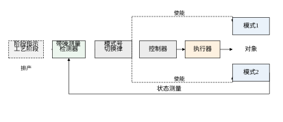
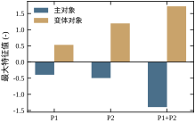
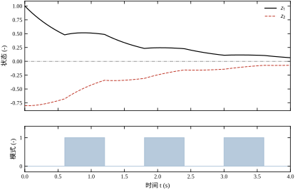
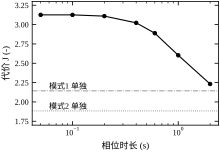
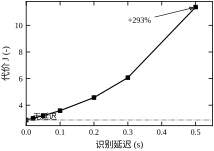
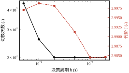
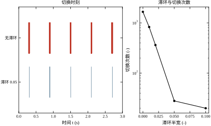
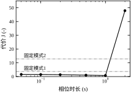
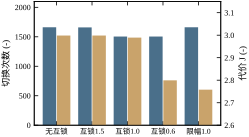
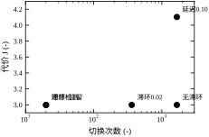

先看一台再常见不过的间歇反应器。它按批次运行，一个周期里有两段工艺：前一段夹套通蒸汽，把物料从常温升到反应温度，这一段叫加热阶段；后一段夹套改通冷却水，把反应放出的热量带走，防止飞温，这一段叫冷却阶段。两段的传热系数、物料黏度、阀门特性都不一样，因此同一套状态变量在两段里服从两套不同的动态。工程师的做法通常是给两段各整一套 PID 参数，靠一个温度或时间信号在两组参数之间切。这套做法在产线上跑了几十年，看起来毫无问题。
但只要把两段的模型并排写出来，就会看到一个不舒服的事实：两段的开环极点都在右半平面。本章用的对象是
\dot{\boldsymbol z}=\boldsymbol A_{\sigma(t)}\boldsymbol z+\boldsymbol B_{\sigma(t)}w,\qquad \sigma(t)\in\{1,2\} \tag{76-1}
其中
\boldsymbol A_1=\begin{bmatrix}0.75 & 0.30\\ 0.10 & -1.10\end{bmatrix},\quad \boldsymbol B_1=\begin{bmatrix}1.00\\0.60\end{bmatrix},\qquad \boldsymbol A_2=\begin{bmatrix}-1.05 & 0.20\\ 0.15 & 0.65\end{bmatrix},\quad \boldsymbol B_2=\begin{bmatrix}0.80\\1.00\end{bmatrix} \tag{76-2}
\boldsymbol A_1 的极点是一个 +0.7661、一个 -1.1161；\boldsymbol A_2 的极点是一个 -1.0675、一个 +0.6675。也就是说，每一段都有一个不稳定方向，而且不稳定的方向不同：加热段是第一个状态分量在长，冷却段是第二个状态分量在长。这正是间歇反应器的典型结构——加热段的进料波动会积成温度偏差，冷却段的移热滞后会积成压力偏差。两段都必须靠反馈压住，否则各自在几十秒内发散。
图 76-1 画出了这条回路的信号流。与普通单回路相比，它多出三个方块：检测器、切换律、以及对象的两个模态。检测器负责回答“现在处在哪一段”，切换律负责回答“该用哪套参数”，对象的两个模态则代表两段不同的动态。

这张图里最容易被低估的是检测器。它看到的不是“模式号”这个干净的数字，而是温度、压力、流量这些带噪声的连续量。检测器要拿这些量去判断“现在算加热还是冷却”，判断本身就有延迟、有误判、有抖动。本章后面会看到，决定这套系统能不能用的，往往不是两套控制参数整得好不好，而是检测器有多快、有多稳。
这是混杂系统最反直觉的一点，也是本章的出发点。两段各自配上合适的增益后，两个闭环矩阵
\boldsymbol C_i=\boldsymbol A_i-\boldsymbol B_i\boldsymbol K_i,\qquad i=1,2 \tag{76-3}
都是 Hurwitz 的。本章按 \boldsymbol Q=\boldsymbol I、R=1 分别解 LQR，得到
\boldsymbol K_1=\begin{bmatrix}1.9853 & 0.3075\end{bmatrix},\qquad \boldsymbol K_2=\begin{bmatrix}0.2292 & 1.8740\end{bmatrix} \tag{76-4}
闭环极点分别是 -1.1659、-1.3539 与 -1.5494、-0.9079。单看每一段，衰减都很快，时间常数在 0.65 到 1.1 s 之间。
问题出在“切”这个动作上。切换瞬间，控制器从 \boldsymbol K_1 跳到 \boldsymbol K_2，输入 w 会跳一个量；对象的状态虽然连续，但它接下来的运动方向由新的模态决定。更麻烦的是，闭环稳定性不是两个闭环矩阵各自性质的简单叠加：存在这样的例子，两个闭环都稳定，但以某种节奏来回切换时整体发散；也存在这样的例子，两个闭环都稳定，任意快速切换也稳定。区别在于两个闭环是否共享一个公共的 Lyapunov 函数。本章的主对象属于后者（§76.2.2 会实测验证），而变体对象属于前者（§76.6.4）——这正好让两种情形都能被算出来，而不是只停在定理陈述上。
还有一个更贴近现场的事实：即使理论上任意切换都稳定，切换本身也要付代价。本章实测，把相位时长从 2.0 s 压到 0.05 s，代价从 2.2322 涨到 3.1261，涨幅 40.0\%。这部分代价不来自失稳，而来自“两套控制目标互相打断”：加热段的增益刚把第一个分量压下去，冷却段的增益又把第二个分量顶起来，反之亦然。理解这一点，才能理解为什么现场“多切几次没关系”的直觉是错的。
混杂系统的设计看起来只是“多写几个 if”，工程上却要同时回答四个问题，任何一个答错都会让回路失效。
第一个：模式什么时候切？ 这由工艺决定，还是由状态决定？本章的对象是工艺决定——批次排产到时间就换段，控制无权改变。另一类系统是状态决定，例如“温度超过阈值就切冷却”，这时切换律本身成了控制器的一部分，可能引入抖振。两种情形的稳定性论证完全不同：前者是“给定切换信号下的稳定性”，后者是“设计切换信号使其稳定”。
第二个：切多快？ 也就是驻留时间。工艺给定的相位长度不一定是控制想要的长度。相位太短，切换代价高、执行器磨损快；相位太长，每段末端的偏差又要靠增益硬压。本章会给出一个可算的驻留下界（式 76-9），并说明它有多保守。
第三个：控制器多久才知道模式变了？ 这是检测延迟。温度探头有热惯性，压力变送器有阻尼，PLC 的扫描周期也有几毫秒到几十毫秒。延迟期间控制器用旧参数控制新对象，这一段时间是纯粹的性能损失，严重时直接把系统推向失稳。本章实测：相位 0.60 s、延迟从 0 增到 0.50 s，代价从 2.8892 涨到 11.3721，涨了 293.6\%，末值从 6.10\times10^{-4} 涨到 0.340。
第四个：切的时候安不安全？ 切换意味着阀门动作、加热器投切、泵启停，这些动作在错误的时刻发生会造成冲击。工程上要有互锁：输入太大不许切、压差不够不许切、安全链未复位不许切。互锁会推迟切换，推迟又会影响性能，这是一个必须显式权衡的环节（§76.10.3）。
这四个问题构成了本章的骨架。§76.2 给数学，§76.3 给七步流程，§76.4 与 §76.5 分别给连续监测与离散决策的实测，§76.6 讨论稳定性与性能，§76.7 逐个解释七个参数，§76.8 给调参流程，§76.9 讲优化，§76.10 讲落地。
四条基线列在表 76-1。前两行是两个模态单独运行时的成绩，它们给出“切换最多能好到什么程度”的参照。第三行是理想检测下的切换，第四行是相位对齐的周期切换。
| 方案 | 切换次数 | 代价 J | 输入峰值 | 相对模式 1 |
|---|---|---|---|---|
| 仅模式 1 | 0 | 2.1433 | 1.7393 | 1.000 |
| 仅模式 2 | 0 | 1.8835 | 1.2700 | 0.879 |
| 理想检测切换 | 20 | 2.9982 | 1.7393 | 1.399 |
| 周期切换 T=0.60 s | 19 | 2.8892 | 1.7393 | 1.348 |
表 76-1 里最刺眼的是：切换反而比任一单模态都差。只跑模式 2，代价 1.8835；按工艺切 20 次，代价 2.9982，高出 59.2\%。这不是仿真的偶然，而是本章的核心现象之一。原因有三层：其一，切换把两个本来各自收敛的瞬态接在一起，接缝处的状态既不适合模式 1 也不适合模式 2；其二，每次切换都伴随输入跳变，w^2 项在跳变附近抬高；其三，模式 2 的增益对第一个分量几乎没有作用（K_{2,1}=0.2292），加热段积累的第一个分量在冷却段只能靠耦合慢慢泄掉。
表 76-1 的第三、四行还藏着一个细节：两者切换次数只差 1 次，代价却差 3.8\%。差别只在首次切换发生在 0.3 s 还是 0.6 s。本章 §76.4.4 会把这件事单独说清：切换系统的性能对相位极其敏感，比较两种方案时必须对齐相位，否则几十分的差异会被误读成机制优劣。
混杂系统不是一个孤立的方法，它与前后几章有明显交集，边界要说清。
与第 44、106 章的 PID 的关系。 工业现场最常见的“切换”就是增益调度（gain scheduling）：按工况把几组 PID 参数存起来，到哪段用哪组。本章的 \boldsymbol K_1、\boldsymbol K_2 可以理解成两组广义的 PID 参数，区别在于本章显式处理切换瞬间的稳定性和代价，而不只是“换一组数试试”。若现场已有整定好的 PID，引入本章方法的改动量很小：加一个检测器、一个切换律、一条互锁，控制参数不动。
与第 58、80 章的 MPC 的关系。 切换 MPC 是混杂系统的一个分支：每个模态一套预测模型，切换时重置优化问题。它的难点不在稳定性，而在“切换瞬间的可行性”——上一段的最优解在下一段可能违反约束。本章不展开，只在 §76.9.4 指出接口。
与第 47、107 章的 Smith 预估的关系。 Smith 预估补偿的是“传输延迟已知且固定”，本章的模式识别延迟是“信息延迟”，两者都会让控制器用旧信息。区别是 Smith 预估在控制器结构里补偿，本章在切换律里规避（驻留时间、延迟补偿）。两者可以叠加：先补偿传输延迟，再处理识别延迟。
与第 75 章的事件触发的关系。 第 75 章决定“什么时候发数据”，本章决定“用哪套参数”。两者正交，也可以叠加：事件触发的判决器可以在模式切换瞬间强制发送一次，保证控制器第一时间拿到新模式（§76.10.4）。
与第 77、78 章的关系。 第 77 章的 Koopman 方法用一组模态的线性组合描述非线性对象，本质上也是一种“软切换”；第 78 章的容错控制要在故障后切换到备用模态，其稳定性论证直接复用本章的多 Lyapunov 框架。
§76.2 从混杂自动机出发，把共同 Lyapunov、多 Lyapunov、驻留时间、平均系统、滞环五件事的数学写清楚，重点是“为什么共同 Lyapunov 是任意切换稳定的充分条件”与“为什么多 Lyapunov 给出的驻留时间往往很保守”。
§76.3 给七步设计流程。§76.4 与 §76.5 分别是连续监测与离散决策两种实现，给出全部实测数据。§76.6 讨论稳定性与性能，§76.7 逐个解释七个参数，§76.8 给调参流程与记录模板，§76.9 讲优化，§76.10 讲落地，§76.11 给优缺点与边界，§76.12 给可运行代码。
一句话核心先放在这里：切换系统的稳定性靠“两个闭环共享一个 Lyapunov 函数”或“每次驻留足够久”来保证，而它的性能几乎全被“检测延迟”和“切换抖振”吃掉；参数整定的重点不在两套增益，而在检测器与驻留时间。
混杂系统最常用的描述是混杂自动机（hybrid automaton）。它由五部分组成：一组离散状态（模态）I=\{1,2\}、每个模态下的连续动态、模态之间的转移关系（守卫）、转移时的重置映射、以及初始条件。写成
\dot{\boldsymbol z}=\boldsymbol A_i\boldsymbol z+\boldsymbol B_i w,\quad \boldsymbol z\in\mathcal X_i;\qquad (i,\boldsymbol z)\in\mathcal G_{ij}\ \Rightarrow\ \sigma(t^+)=j \tag{76-5}
\mathcal X_i 是模态 i 的合法状态域，\mathcal G_{ij} 是从 i 跳到 j 的守卫集合。本章的对象没有状态跳变（\boldsymbol z 在切换瞬间连续），所以重置映射是恒等映射；但输入 w 会跳，因为它由 \boldsymbol K_i 算出。这一点在实现时要特别注意：状态连续、输入不连续，执行器看到的是一个阶跃。
守卫的写法决定了系统的定性行为。本章用两类：
两类守卫的数学处理不同。时间守卫下，切换信号是外生给定的，稳定性问题是“给定 \sigma(t)，闭环是否稳定”；状态守卫下，切换信号由状态决定，稳定性问题变成“设计守卫，使闭环稳定”，难度高一个量级，也更容易出现抖振（§76.2.5）。
若存在一个正定矩阵 \boldsymbol P，使所有模态的闭环都满足
\boldsymbol C_i^{\mathsf T}\boldsymbol P+\boldsymbol P\boldsymbol C_i\prec0,\qquad i=1,2 \tag{76-6}
则 V(\boldsymbol z)=\boldsymbol z^{\mathsf T}\boldsymbol P\boldsymbol z 在任意切换信号下都单调衰减：
\dot V=\boldsymbol z^{\mathsf T}\big(\boldsymbol C_{\sigma}^{\mathsf T}\boldsymbol P+\boldsymbol P\boldsymbol C_{\sigma}\big)\boldsymbol z \le-\lambda_{\min}\|\boldsymbol z\|^2<0 \tag{76-7}
这就是共同 Lyapunov 定理。它的价值在于“任意”两个字：不需要知道工艺怎么排产、不需要限制驻留时间、不需要假设切换有多快，只要式 (76-6) 成立，系统就稳。工程上这等价于“这套参数怎么切都不会炸”，是最省心的结论。
式 (76-6) 是一组线性矩阵不等式，标准解法是 LMI 求解器。本章不引入额外依赖，而是用一个更朴素、也更容易解释的构造：先解两个 Lyapunov 方程
\boldsymbol C_i^{\mathsf T}\boldsymbol P_i+\boldsymbol P_i\boldsymbol C_i=-\boldsymbol I,\qquad i=1,2 \tag{76-8}
再取 \boldsymbol P=\boldsymbol P_1+\boldsymbol P_2 作为候选。之所以可以这样试，是因为 \boldsymbol P_1、\boldsymbol P_2 分别是两个模态“最自然”的能量度量，它们的和往往能同时压住两边。这不是定理，只是一个可验证的构造；验证的办法就是直接算式 (76-6) 左边矩阵的最大特征值。
本章对象上，三个候选的结果都列在图 76-2 与表 76-2。\boldsymbol P_1 对模式 1 给出 -1.0000、对模式 2 给出 -0.3948；\boldsymbol P_2 给出 -0.4964 与 -1.0000；\boldsymbol P_1+\boldsymbol P_2 给出 -1.4964 与 -1.3948。三者都负，说明主对象存在共同二次 Lyapunov 函数，任意切换在二次型意义下稳定。

| 候选 \boldsymbol P | 主对象模式 1 | 主对象模式 2 | 变体模式 1 | 变体模式 2 |
|---|---|---|---|---|
| \boldsymbol P_1 | -1.0000 | -0.3948 | 0.4933 | 0.5309 |
| \boldsymbol P_2 | -0.4964 | -1.0000 | 0.2140 | 1.1947 |
| \boldsymbol P_1+\boldsymbol P_2 | -1.4964 | -1.3948 | 0.6760 | 1.7230 |
表 76-2 的右半边是变体对象（§76.6.4 详述）。它的两个闭环极点都是 -0.5，单看都很稳定，但三个候选矩阵的最大特征值全为正，连 \boldsymbol P=\boldsymbol I 试也是 +1.0000。这说明变体对象不存在共同二次 Lyapunov 函数，共同 Lyapunov 这条路走不通，只能换多 Lyapunov。
这里要强调一个容易误解的地方：共同 Lyapunov 不存在，不等于系统一定不稳。它只说明“用二次型论证任意切换稳定”这条路断了。系统可能在所有实际切换信号下都稳定，只是需要一个更细的分析工具。§76.2.3 的多 Lyapunov 就是这样一个工具。
多 Lyapunov 的思路是：每个模态用自己的能量函数 V_i(\boldsymbol z)=\boldsymbol z^{\mathsf T}\boldsymbol P_i\boldsymbol z，允许每个 V_i 在自己的驻留区间内下降，但不要求跨模态单调。切换瞬间，V_j 可能比 V_i 大，这个“跳升”由一个比值控制：
V_j(\boldsymbol z)\le\mu\,V_i(\boldsymbol z),\qquad \mu=\max_{i,j}\frac{\lambda_{\max}(\boldsymbol P_j)}{\lambda_{\min}(\boldsymbol P_i)} \tag{76-9}
若每个模态在自己的区间内至少以速率 \lambda 衰减，且驻留时间满足
T_d>\frac{\ln\mu}{\lambda} \tag{76-10}
则整个切换序列上的能量包络仍趋于零。式 (76-10) 就是驻留时间判据，也是现场“两次切换之间至少等多久”的理论依据。
本章对象上，\mu=2.5139、\lambda=1.3539 1/s，式 (76-10) 给出 T_d>0.6809 s。这个数字看起来合理：相位 0.60 s 略小于它，按判据应当“不保证稳定”。但 §76.4 的实测显示，T_d=0.05 s 时系统依然收敛（代价 3.1261、末值 6.96\times10^{-4}），根本没有失稳。原因是主对象存在共同 Lyapunov，多 Lyapunov 判据对它而言是多余的、因而必然保守。
保守多少？ 判据要求 0.6809 s，实测 0.05 s 就够，相差 13.6 倍。这个倍数不是常数，取决于两个 Lyapunov 矩阵的条件数：\mu 越接近 1（两个模态的“能量形状”越像），判据越松。本章 \mu=2.5139 已经不大，仍给出 13.6 倍的保守量，可见多 Lyapunov 判据在工程上只能当“安全下限”用，不能当“最优驻留时间”用。真正的最优驻留时间要靠仿真扫描（§76.7.2）。
对变体对象，情况反过来：它没有共同 Lyapunov，多 Lyapunov 判据是唯一可用的解析工具。它的 \mu 与 \lambda 会给出一个下界，而这个下界附近的实测行为，正好可以检验判据的紧不紧（§76.6.4）。
当切换频率远高于对象的时间常数时，系统行为趋近于一个平均系统：
\boldsymbol A_{\mathrm{avg}}=\sum_{i\in I}\alpha_i\boldsymbol C_i,\qquad \alpha_i=\lim_{T\to\infty}\frac{1}{T}\int_0^T\mathbf 1_{\{\sigma(t)=i\}}\,\mathrm{d}t \tag{76-11}
\alpha_i 是模态 i 的时间占比。平均系统稳定，是高切换频率下系统稳定的必要条件之一；但它不是充分条件，因为高频切换还会激励出“切换纹波”，纹波的幅值与切换周期成正比。
本章对象上，两个模态等时切换时 \boldsymbol A_{\mathrm{avg}}=(\boldsymbol C_1+\boldsymbol C_2)/2，它的极点是 -0.6259、-1.8627，稳定。这与实测吻合：T=0.05 s 时系统没有发散，只是代价升到 3.1261。也就是说，高频切换没有破坏稳定性，破坏的是性能。
平均系统还有一个实用价值：它可以用来快速估计“某个相位比例下的大致行为”。例如工艺要求加热段占 70\%、冷却段占 30\%，就可以先算 \boldsymbol A_{\mathrm{avg}}=0.7\boldsymbol C_1+0.3\boldsymbol C_2 的极点，判断大致稳定域，再去仿真细化。这一步只要一次矩阵特征值计算，比反复仿真快得多。
状态守卫最容易出的问题是抖振（chattering）：当状态在守卫面附近徘徊时，模态反复切换，切换频率由噪声和数值步长决定，而不是由物理决定。理想继电器（无滞环）在数学上是“切换面两侧各取一个模态”，在实现上却是“每个采样周期都可能翻转”。
标准的正则化手段是滞环：把单一的守卫面变成一条带，
\mathcal G_{12}=\{q\le 0.5-w\},\qquad \mathcal G_{21}=\{q\ge 0.5+w\} \tag{76-12}
带宽 2w 内的区域保持原模态不变。w 越大，抖振越少，但切换越迟钝；w 太小，噪声照样能穿过去。
抖振的强度可以用一个粗估式判断。若指示量的斜率为 \dot q、噪声标准差为 \sigma_n，则单位时间内穿越阈值的次数约为
N_{\mathrm{ch}}\approx\frac{\sigma_n\,\dot q}{w^{2}}\quad\text{（量级估计）} \tag{76-13}
这个式子只用来判断趋势：噪声翻倍，切换次数翻倍；滞环翻倍，切换次数降到四分之一。本章实测与这个趋势一致（§76.6.3），但绝对数值不能直接套用，因为噪声不是白噪声、指示量也不是匀速穿越。
现场的实现几乎都是离散的：检测器每 h 秒采一次、判一次，控制器每 h 秒更新一次。离散化后的混杂系统写成
\boldsymbol z_{k+1}=\boldsymbol A_{\sigma_k}\boldsymbol z_k+\boldsymbol B_{\sigma_k}w_k,\qquad \sigma_k=\delta(\boldsymbol y_k,\sigma_{k-1}) \tag{76-14}
\delta 是判决函数，\boldsymbol y_k 是带噪测量。离散化引入两个新问题：一是漏检，即模式在两次采样之间变化，判决器看不到；二是判决滞后，即模式已经变了，判决器要等到下一个采样点才反应。两者都等价于额外的延迟，其量级是 h/2 到 h。
离散混杂系统的稳定性判据与连续情形同构，只需把式 (76-6) 换成离散 Lyapunov 不等式 \boldsymbol C_i^{\mathsf T}\boldsymbol P\boldsymbol C_i-\boldsymbol P\prec0。本章不重复推导，因为主对象的采样周期远小于时间常数，连续判据已经够用；只在 §76.5 用实测说明 h 增大到多少会出问题。
本章沿用二次代价
J=\int_0^{T}\big(\boldsymbol z^{\mathsf T}\boldsymbol Q\boldsymbol z+Rw^2\big)\,\mathrm{d}t \tag{76-15}
\boldsymbol Q=\boldsymbol I、R=1、T=12 s。为了看清切换的代价从哪里来，把它按区间拆开：
J=\underbrace{\sum_k\int_{t_k}^{t_{k+1}}\boldsymbol z^{\mathsf T}\boldsymbol Q\boldsymbol z\,\mathrm{d}t}_{\text{段内偏差}} +\underbrace{\sum_k\int_{t_k}^{t_{k+1}}Rw^2\,\mathrm{d}t}_{\text{控制能量}} \tag{76-16}
切换的影响同时进入两项：段内偏差因为“接缝处的状态不合适”而变大，控制能量因为“每次切换输入跳变”而变大。本章的实测显示，前者是主因，后者是次因——把相位从 0.6 s 缩到 0.05 s，代价涨 8.2\%，而输入峰值几乎不变（1.7393 始终相同），说明涨的是偏差项而不是能量项。
模式识别延迟可以写成一个移位算子：控制器在 t 时刻使用的模态是
\sigma_{\mathrm{c}}(t)=\sigma(t-\theta_m) \tag{76-17}
\theta_m 是识别延迟。闭环因此变成“用旧模态的增益控制新模态的对象”：
\dot{\boldsymbol z}=\boldsymbol A_{\sigma(t)}\boldsymbol z-\boldsymbol B_{\sigma(t)}\boldsymbol K_{\sigma(t-\theta_m)}\boldsymbol z \tag{76-18}
这个式子是本章所有延迟分析的起点。它说明：延迟的危害不在于“信息旧”，而在于“增益与对象错配”。错配的程度取决于 \boldsymbol K_1 与 \boldsymbol K_2 差多少，以及 \theta_m 相对相位长度占多大比例。
本章两个增益的差异很大：\boldsymbol K_1=[1.9853,\,0.3075]、\boldsymbol K_2=[0.2292,\,1.8740]，第一个分量上的增益差 8.7 倍，第二个分量上差 6.1 倍。这种“一个管一个分量”的结构，使得错配的后果特别明显：用错增益时，本该被压住的分量没人管，反而被另一个分量的增益推了一把。
工程上三个量必须一起满足。把式 (76-10) 与式 (76-17) 合起来，得到
T_d>\theta_m+\frac{\ln\mu}{\lambda} \tag{76-19}
左边是相位长度，右边是“检测延迟 + 能量跳升所需的时间”。这个式子的含义很直白：相位必须长到“检测器来得及反应，且反应后还有时间把能量压回去”。本章对象上，若按多 Lyapunov 判据（0.6809 s）再加 0.10 s 延迟，就要求 T_d>0.78 s，而工艺给的相位只有 0.60 s——按判据这不可行，但实测可行（§76.6.2），再次说明判据保守。
真正卡住工程的是式 (76-19) 里的 \theta_m，而不是 \ln\mu/\lambda。因为 \theta_m 由硬件决定，往往比理论驻留时间还大：一个带保护套管的热电偶，时间常数可以到十几秒；一个气相色谱分析周期，可以是几分钟。这时候“驻留时间”不是控制能选的，而是被检测手段锁死的。
最后一组约束来自执行器与安全链。切换不是免费的：阀门要动作、加热器要投切、泵要启停。这些动作有最小间隔、有冲击电流、有机械寿命。把它们写成约束：
t_{k+1}-t_k\ge T_{\mathrm{mech}},\qquad |w(t_k^+)-w(t_k^-)|\le\Delta w_{\max},\qquad |w|\le w_{\max} \tag{76-20}
T_{\mathrm{mech}} 是机械最小间隔，\Delta w_{\max} 是允许的输入跳变，w_{\max} 是限幅。式 (76-20) 与式 (76-19) 往往冲突：稳定性要求驻留够长，机械寿命要求切换够少，性能要求切换够及时。三者的可行域可能为空，这时唯一的出路是改硬件（更快的检测、更耐用的执行器），而不是继续调参数。
本章 §76.10.3 的互锁就是式 (76-20) 的一种实现：当输入超过阈值时推迟切换，把跳变留到“输入本来就小”的时刻。实测表明，互锁不仅减少切换次数（1662\to1504），还顺带降低了代价（2.9984\to2.7994），因为它避开了“输入大时切换”这种最坏组合。
这一节的公式里出现了二十多个符号，量纲并不统一：时间、增益、二次型值、无量纲指示量混在一起。先把它们按“时间类、无量纲类、矩阵类”分三组列清，后面读式子和查表时可以直接对照，不必来回翻。
时间类（单位 s）：t 是仿真时间；T 是相位长度，本章 0.60；h 是决策周期，0.005 到 0.20；T_d 是实际驻留时间；T_d^* 是多 Lyapunov 给出的驻留下界，0.6809；\theta_m 是模式识别延迟，本章扫到 0.50；\theta_m^{\mathrm{eff}} 是计入确认计数后的等效延迟；T_{\mathrm{mech}} 是执行器机械最小间隔；T_{\mathrm{sim}} 是仿真总时长，12。
无量纲类：q 是工艺指示量，取值在 [0,1]；q_{\mathrm{th}} 是判决阈值，0.50；w 是滞环半宽，本章 0 到 0.10；N 是确认计数；N_{\mathrm{ch}} 是切换次数；\sigma_n 是检测噪声标准差，0.02；\mu 是两个 Lyapunov 矩阵构成的条件数，2.5139；\lambda 是最慢闭环衰减率，1.3539 1/s；J 是二次代价，量纲是“状态平方乘秒”。
矩阵类：\boldsymbol A_i、\boldsymbol B_i 是开环模型；\boldsymbol K_i 是分模态增益；\boldsymbol C_i=\boldsymbol A_i-\boldsymbol B_i\boldsymbol K_i 是闭环矩阵；\boldsymbol P_i、\boldsymbol P 是 Lyapunov 矩阵；\boldsymbol\Phi_i 是离散闭环矩阵；\boldsymbol z 是状态，沿用第 74 章的归一化写法，与 \boldsymbol x 同义。
三组之间真正跨组运算的换算式只有两个：驻留下界 T_d^*=\ln\mu/\lambda 把无量纲的 \mu 与时间的倒数接起来；等效延迟 \theta_m^{\mathrm{eff}}=\theta_m+(N-1)h 把计数 N 折算成时间。其余符号都不跨组。
读表时最容易犯的错是把 w 当成时间。它的量纲是指示量的幅度，换算成时间要除以指示量在阈值处的斜率。本章 q(t)=\frac12(1-\cos\frac{\pi t}{T}) 在 t=T/2 处的斜率是 \pi/(2T)=2.62 每秒，所以 w=0.05 对应约 0.02 s 的判决滞后。这个换算在 §76.7.4 用过一次，是判断“滞环会不会吃掉性能”的关键一步：w 翻四倍到 0.20，滞后就变成 0.08 s，已经与识别延迟同量级。
混杂系统的设计不像单回路那样“整定一组参数、看阶跃响应”就完了。它要把工艺、模型、稳定性、检测、执行器五件事串起来，任何一环跳过都会在别的环节暴露。本章把工程上反复走的流程压成七步，列在表 76-3。表里第二列是每一步的产出物，第三列是“这一步做错会在哪里暴露”。
| 步骤 | 产出物 | 做错的典型症状 |
|---|---|---|
| 1 切分模态 | 模态集合 I 与各模态的合法域 | 模型在某段怎么都不准 |
| 2 分模态建模与整定 | \boldsymbol A_i、\boldsymbol B_i、\boldsymbol K_i | 段内跟踪好，切换后振荡 |
| 3 检验共同 Lyapunov | 三个候选 \boldsymbol P 的最大特征值 | 以为稳，实际靠运气 |
| 4 算驻留下界 | T_d^*=\ln\mu/\lambda | 相位长度没有依据 |
| 5 设计检测器 | 阈值、滞环带宽、驻留、确认次数 | 切换抖动、误判 |
| 6 配互锁 | 输入阈值、机械最小间隔 | 切换时冲击、跳闸 |
| 7 上线核对 | 逐项核对表 | 投运后才发现漏项 |
表 76-3 的顺序不能颠倒。第 3 步必须早于第 5 步，因为共同 Lyapunov 一旦成立，“切换多快”就不再是稳定性问题，检测器可以按性能需要设计；反过来，若先做检测器再算稳定性，往往要推倒重来。同理，第 4 步必须早于第 5 步：驻留下界决定了检测器至少要“按住”多久，否则算出来的滞环带宽没有意义。
还有一个顺序上的经验：第 2 步不要追求“每段都调到最优”。本章的两个增益是标准 LQR 解，没有做任何额外优化；真正决定成败的是第 3 到第 6 步。现场常见的失败模式恰好相反——工程师把 80% 的时间花在给两段各调一组“完美”的 PID，剩下 20% 随手写了个阈值判断，结果投运后一直在切换边界上抖。
切分模态的第一个原则是模态内部可以用一个线性时不变模型描述。间歇反应器的升温段和恒温段不能合成一个模态，因为升温段的温度单调上升、恒温段的温度基本不动，两者的工作点、传热温差、阀门开度都不同，任何一个线性模型都无法同时覆盖。强行合并的结果是模型在每段都不准，而且误差方向相反，整定出来的增益必然有一头是错的。
第二个原则是模态之间的差异要大于检测噪声能分辨的程度。本章两个模态的开环极点分别是 +0.7661 与 +0.6675（不稳定方向相反），闭环矩阵的差异足够大，用温度或压力就能分辨。若两个模态的差异只体现在某个二阶效应上，检测器就要靠很长的观察窗才能判决，延迟随之上升，得不偿失。
第三个原则是模态数不要超过三到四个。每多一个模态，就要多一组模型、一组增益、一组阈值、一条互锁，误判的组合数按平方增长。工程上一个实用的上限是：模态数乘以每个模态的参数个数，不要超过调试人员一周内能逐项核对的数量。本章两个模态、每个模态两个状态，已经是“能讲清”的上限。
切分完成后的检查办法很简单：把每个模态的数据单独拿出来做拟合，看残差是否白、是否同方差。如果某个模态的残差里还残留明显的趋势，说明这个模态切得不够细；如果两个模态的残差几乎一样，说明切得过细，可以合并。
建模的关键是用该模态自己的数据。很多现场的做法是把一整批的数据一起丢给辨识算法，得到一个“平均模型”，再按工况调整参数。这种做法在模态差异大时必然失败，因为平均模型对应的是一个物理上不存在的对象。正确做法是按模态号把数据分段，每段单独辨识，得到 \boldsymbol A_i、\boldsymbol B_i。
辨识实验的设计有三个要求。其一，激励要覆盖整个相位，不能只在相位开头做阶跃，否则辨识出的模型只在开头准。其二，初值要偏离工作点，本章取 \boldsymbol z_0=[1.0,\,-0.8]^{\mathsf T}，两个分量都远离零，这样两个不稳定方向都能被激励出来。其三，采样要快于最快的闭环极点，本章用 h=10^{-4} s 的积分步长，远快于 1.35 1/s 的衰减率。
整定用标准的 LQR，\boldsymbol Q=\boldsymbol I、R=1，得到式 (76-4) 的两个增益。这里要提醒一点：分模态整定只优化段内性能，不优化切换性能。R 取 1 是一个中性的选择，若把 R 调大（更省控制能量），段内偏差会变大但切换冲击会小；若把 R 调小，段内更激进、切换冲击更大。本章没有针对切换去调 R，原因是想先看清“标准整定下切换本身要付多少代价”，这个基线比“精心调过的切换”更有说服力。
表 76-1 已经给出这个基线的结论：切换的代价（2.9982）比单独跑模式 2（1.8835）高 59.2\%。这个差距不可能靠调 R 补回来，它来自结构——两个增益各自只管一个分量，切换时必然有一个分量处于“没人管”的状态。
这一步只要十分钟，却是整章性价比最高的动作。做法是解两个 Lyapunov 方程（式 76-8），取 \boldsymbol P=\boldsymbol P_1+\boldsymbol P_2，然后算 \boldsymbol C_i^{\mathsf T}\boldsymbol P+\boldsymbol P\boldsymbol C_i 的最大特征值。全负，则任意切换稳定，后面的驻留时间约束可以直接放松；有正，则要进入第四步。
本章的三个候选全部为负（表 76-2 左半边），最负的是 \boldsymbol P_1+\boldsymbol P_2，两个模态分别是 -1.4964 与 -1.3948。这说明主对象不但稳定，而且“余量对称”——两个模态在同一个能量度量下都以相近的速率衰减，这正是任意切换稳定的几何含义。
这里必须把一个容易被误读的结论说清：三个候选都失败，不等于共同 Lyapunov 不存在。式 (76-8) 的解只是一个启发式构造，真正的判据是线性矩阵不等式
\boldsymbol C_i^{\mathsf T}\boldsymbol P+\boldsymbol P\boldsymbol C_i\prec0,\quad \boldsymbol P\succ0,\qquad i=1,2 \tag{76-21}
它有无解要靠 LMI 求解器判定。本章不引入额外依赖，所以只在变体对象上补了一个更弱的检查：取 \boldsymbol P=\boldsymbol I 试算，得到 +1.0000。\boldsymbol I 是最“中立”的候选，它都失败，说明这个对象的两个闭环在几何上互相“拧着”，共同二次型大概率不存在。这个结论在 §76.6.4 会被仿真印证——变体对象在快速切换下确实发散。
第三步失败时，退到多 Lyapunov。要算两个量：能量跳升比 \mu 与最慢衰减率 \lambda。本章的实现是
\mu=\frac{\max\mathrm{eig}(\boldsymbol P_1^{-1}\boldsymbol P_2)}{\min\mathrm{eig}(\boldsymbol P_1^{-1}\boldsymbol P_2)},\qquad \lambda=\min_i\Big(-\max_k\mathrm{Re}\,\lambda_k(\boldsymbol C_i)\Big) \tag{76-22}
\mu 衡量两个能量函数的“形状差”，\lambda 取两个模态中最慢的那个衰减率（保守起见取最小）。代入本章数据，\mu=2.5139、\lambda=1.3539 1/s，得到 T_d^*=0.6809 s。
这个数字要当“下限”用，不能当“目标”用。理由在 §76.2.3 已经说过：主对象存在共同 Lyapunov，多 Lyapunov 判据对它是多余的，必然保守。实测 T_d=0.05 s 仍然收敛，保守倍数 13.6。工程上的正确用法是：若工艺给的相位大于 T_d^*，直接放心用；若小于，不要立刻否定，先用仿真验证，再用实测确认。
反过来，对变体对象这类没有共同 Lyapunov 的系统，T_d^* 就是硬约束。它的驻留扫描（§76.6.4）显示，T=2.00 s 时反而发散、T=1.00 s 时收敛，这与“驻留越长越安全”的直觉相反，原因是非正规矩阵的瞬态增长——这一点在 §76.6.4 单独解释。
检测器要回答“现在处在哪个模态”，它的输入是带噪的测量，输出是模态号。设计有四个可调项：判决量、阈值、滞环带宽、驻留时间。
判决量要选对模态最敏感、对噪声最不敏感的那个组合。本章用工艺指示量
q(t)=\frac{1}{2}\Big(1-\cos\frac{\pi t}{T}\Big) \tag{76-23}
它在 t=0 与 t=2T 处为 0、在 t=T 处为 1，把“时段”映射成 [0,1] 上的连续量，再在 0.5 附近判决。用连续量而不是直接用时间，是因为现场的时间基准会漂，而工艺量（温度、转化率）不会。
阈值定在 0.5 是几何中点，但工程上往往要偏移，因为两个模态的“误判代价”不对称：把加热误判成冷却，可能造成飞温；把冷却误判成加热，只是多耗一点蒸汽。误判代价不对称时，阈值应向“安全侧”偏移，这一点在 §76.7.3 展开。
滞环带宽 2w 与驻留时间 T_d 是一对互补的手段：滞环管“小幅抖动”，驻留管“快速反复”。本章实测（§76.6.3），无滞环时噪声 0.02 造成 1662 次切换；加 w=0.02 降到 362 次；再加 T_d=0.05 s 降到 20 次，与无噪的理想检测完全一致。三者叠加的效果不是线性相加，而是把两个不同的失效通道分别堵住。
互锁是“允许不允许切”的最后一票否决。它的输入是执行器状态与安全链状态，输出是“允许/推迟”。本章实现的互锁只有一条规则：输入绝对值超过阈值 u_{\mathrm{th}} 时推迟切换。这条规则对应式 (76-20) 的跳变约束——输入大时切换，跳变也大。
互锁与限幅是两件不同的事，现场经常混淆。限幅改的是输入本身（w 被截到 \pm1.0），切换照常发生；互锁改的是切换时刻，输入不变、切换被推迟。本章实测：仅限幅时切换次数仍是 1662，代价降到 2.7578；互锁 u_{\mathrm{th}}=1.0 时切换降到 1504 次，代价 2.9894。两者的代价都降了，但机制完全不同——限幅靠“少给控制量”省能量，互锁靠“避开最坏切换时刻”省偏差。
前六步做完，还有一张清单要逐项打勾。这张清单不是形式主义，本章的每个实测数字背后都对应一条：
第 4 条值得单独说。本章实测，延迟从 0 增到 0.50 s，代价从 2.8892 涨到 11.3721，涨了 293.6\%。相位是 0.60 s，延迟占到 83\% 时系统虽未失稳，但已经没有任何性能可言。经验阈值是延迟不超过相位的 1/3，即 0.20 s；本章该点的代价是 4.5764，比无延迟高 58.4\%，这已经是可接受的极限。
七步流程不可能一次走通。工程上最常见的返工有三个，每个都对应一类“用参数补结构”的错误。
返工点一：第三步发现共同 Lyapunov 不存在。 这时容易直接跳到第四步算驻留下界，然后按“驻留够长”去设计。这是错的方向。多 Lyapunov 只是补丁，它保证的是“慢切稳定”，而现场往往需要快切。正确的做法是先回到第二步，试着重配增益：把两个增益调得更接近，共同 Lyapunov 往往就出现了。
判断“该回去重配还是继续算驻留”有一个粗略依据：看 \boldsymbol P=\boldsymbol I 检验的结果。本章变体对象是 +1.0000，说明两个闭环的“形状”正交得很厉害，重配增益的收益不大；若检验结果只是 +0.05 这种小正值，说明两者已经很接近，微调增益就可能翻负。
返工点二：第五步发现滞环加到很大，切换次数仍然降不下来。 这通常不是检测器的问题，而是第一步的模态切分有问题：指示量对两个模态的分辨力不够，噪声和“模态差异”同量级。表现是“无论 w 多大，总有穿越”。这时应回到第一步，换一个更敏感的指示量（例如用两个测量的组合，而不是单个温度），或者干脆合并模态。继续加大 w 只会让判决越来越迟钝，问题从“抖”变成“慢”。
返工点三：第七步发现延迟占相位超过一半。 这不是参数问题，也不是模型问题，而是硬件或工艺问题。表 76-5 已经给出后果：延迟 0.50 s、相位 0.60 s 时代价 11.3721，是基准的 3.94 倍，末值 0.340。这时无论怎么调 w、h、u_{\mathrm{th}} 都救不回来，因为它们的影响都是百分之几量级。唯一出路是换更快的传感器、缩短变送器阻尼，或者把相位拉长。
三个返工点有一个共同特征：它们都发生在“参数已经无能为力”的地方。这也是本章反复强调“结构问题不能用参数修”的原因。工程上判断是否该返工，可以看“把参数推到极值后会怎样”：若把 w 推到 0.20、把 T_d 推到 1 s 仍然不行，那就是结构问题，继续调只是浪费时间。
还有一个返工预算的经验：一个新对象通常走两到三轮就能定型。若走到第五轮还在“这头好了那头坏”，几乎一定是模态切分错了，而不是参数没调好。这时应该停下来重画工艺流程图，重新问“到底有几个本质不同的工况”。
流程讲完了，最后用本章的真实取值把七步填一遍。填表的意义是让人看到每一步的“产出物”到底长什么样，而不是停留在“要算一个 Lyapunov 矩阵”这种抽象描述上。填完之后再回头看表 76-3，就能对上号。
第一步，切分模态。 产出是模态集合 I=\{1,2\} 与各自的合法域：模式 1 覆盖升温段（指示量 q<0.5），模式 2 覆盖冷却段（q>0.5）。边界处两模态都合法，归属由滞环决定。
第二步，分模态建模与整定。 产出是 \boldsymbol A_1,\boldsymbol B_1 与 \boldsymbol A_2,\boldsymbol B_2 四组参数，以及两个增益 \boldsymbol K_1=[1.9853,0.3075]、\boldsymbol K_2=[0.2292,1.8740]。对应闭环极点 -1.1659/-1.3539 与 -1.5494/-0.9079，四极点全在左半平面。
第三步，检验共同 Lyapunov。 产出是三个候选矩阵在两个模态上的最大特征值。最终采用的 \boldsymbol P_1+\boldsymbol P_2 给出 -1.4964 与 -1.3948，三者全负，结论是“任意切换稳定”，不需要驻留约束。
第四步，算驻留下界。 产出是 \mu=2.5139、\lambda=1.3539 1/s、T_d^*=0.6809 s。由于第三步已经通过，这个下界只作为最保守口径的参考；本章相位 0.60 s 比它小 13.6 倍，仍不影响稳定。
第五步，设计检测器。 产出是 q_{\mathrm{th}}=0.50、w=0.05、h=0.05 s、N=2、最小驻留 0.05 s。这五个数在表 76-8 与表 76-6 里都有对应的扫描行，选的是“次数接近理想、代价几乎不变”的那一行。
第六步，配互锁。 产出是 u_{\mathrm{th}}=1.0（输入峰值 1.7393 的 0.57 倍）、T_{\mathrm{mech}}=0.05 s、u_{\max}=1.5。互锁把切换次数从 1662 压到 1504，代价顺带降 0.3\%。
第七步，上线核对。 产出是 §76.3.8 那张清单的逐项打勾记录，以及 §76.10.5 的三条回退条件。
填完这张表会发现一件事：七步里只有第二步需要“控制理论”，其余六步都是工程判断。 第三步看似理论，实际只是把两组闭环矩阵代进一个特征值计算；第四步只是一个对数除法。真正难的是第五、六步——要在噪声、延迟、机械寿命三者之间找平衡，而这三者都没有解析解，只能靠扫描表加现场数据。这也解释了为什么现场调试时间总是花在检测器上，而不是花在整定增益上。
反过来看，如果一个人把七步填完，却发现第六步的 u_{\mathrm{th}} 无论取多少都“两头不落好”（取小了切换被无限推迟，取大了等于没装），那说明第一步的模态切分与第六步的互锁设计不匹配：换模态时输入本来就应该大，互锁的门槛却按“正常调节”定。这时不是调 u_{\mathrm{th}}，而是换互锁的判据——例如改用“输入变化率”或“阀门行程余量”，而不是输入绝对值。
先看一张最普通的运行记录。图 76-3 是相位 0.60 s 的周期切换在 12 s 内的轨迹，上图画两个状态分量，下图画模式号。这张图有三种读法，每种对应一个工程问题。

第一种读法是看收敛。两个分量从 [1.0,\,-0.8] 出发，z_1 单调下压、z_2 先下探再回零，4 s 内都进入 10^{-3} 量级。这说明切换没有破坏稳定性，与 §76.2.2 的共同 Lyapunov 结论一致。
第二种读法是看接缝。每次模式翻转的位置，轨迹上都有一个小的拐折：z_1 在模式 1 里被压得快，在模式 2 里几乎不动；z_2 反过来。拐折的幅度就是 §76.2.7 说的“接缝处状态既不适合模式 1 也不适合模式 2”。相位越短，拐折越多，这就是高频切换代价上升的直观来源。
第三种读法是看模式时序。下图的方波严格等宽，因为这是时间守卫。若换成状态守卫（§76.5 的检测器），方波的宽度就不再等宽，而会随噪声起伏——这正是抖振的图形表现（图 76-7 左半张）。
这条轨迹还藏着一个容易被忽略的数字：输入峰值恒为 1.7393，在所有相位下都不变。原因很简单，峰值出现在 t=0 的第一个控制周期，由初始状态决定：
|w(0)|=\big|\boldsymbol K_1\boldsymbol z_0\big| =\big|1.9853\times1.0+0.3075\times(-0.8)\big|=1.7393 \tag{76-24}
切换改变的是后续的控制量，改变不了这个初值冲击。所以“切换让输入峰值变大”这个说法在本章对象上不成立；切换让偏差变大，不让峰值变大。要把这两件事分开，否则会去调错误的参数。
把相位从 0.05 s 拉到 2.00 s，得到表 76-4 与图 76-4。这张表是本章最信息密集的一组数据。
| 相位 T (s) | 代价 J | 相对 T=0.60 | 末值 | 切换次数 |
|---|---|---|---|---|
| 0.05 | 3.1261 | +8.2\% | 6.96\times10^{-4} | 239 |
| 0.10 | 3.1261 | +8.2\% | 6.95\times10^{-4} | 119 |
| 0.20 | 3.1100 | +7.6\% | 6.89\times10^{-4} | 59 |
| 0.40 | 3.0230 | +4.6\% | 6.58\times10^{-4} | 29 |
| 0.60 | 2.8892 | 0 | 6.10\times10^{-4} | 19 |
| 1.00 | 2.6035 | -9.9\% | 4.89\times10^{-4} | 11 |
| 2.00 | 2.2322 | -22.7\% | 2.41\times10^{-4} | 5 |

第一个观察是左端有平台。T=0.05 与 T=0.10 的代价都是 3.1261，四位小数完全相同，末值也只差 10^{-6} 量级，切换次数却差一倍（239 对 119）。这个平台不是数值巧合，而是平均化：对象的慢模态时间常数约 1/1.35\approx0.74 s，当相位远小于它时，控制器看到的是“平均对象”，再快也只是把同样的平均动态重复更多次。工程含义很直接：在平台区内继续缩短相位，只会增加执行器磨损，不会改善性能。
第二个观察是右端没有平台，但有上限。T=2.00 时代价 2.2322，已经逼近单模态的 2.1433（高 4.1\%），但仍高于它。把表 76-1 前两行按时长等权平均得到 2.0134，这是一个粗估的下界——相位趋于无穷时，系统一半时间跑模式 1、一半时间跑模式 2，代价趋近两个单模态代价的平均。T=2.00 的 2.2322 距离这个下界还有 10.9\%，说明相位还不够长，接缝的影响仍然存在。
第三个观察是中间段单调但斜率递减。从 0.60 缩到 0.05，代价涨 8.2\%；从 2.00 缩到 0.60，代价涨 29.4\%。看起来“缩短相位”在长相位区更敏感，这与直觉相反。原因是长相位区每减少一次切换，省下的是“一整段接缝”；短相位区切换太密，接缝互相重叠，单次接缝的边际影响反而小了。这也解释了为什么现场“相位从 2 s 改成 1.5 s”往往感觉不明显，而“从 1 s 改成 0.6 s”却能明显看到波动。
第四个观察是切换不可能优于最好的单模态。表 76-4 最右一列，无论相位取多少，代价都高于 1.8835。本章的对象是工艺强制切换，控制无权选择“只跑模式 2”。但如果工艺允许，纯粹从控制角度看，不切换优于任何切换。这个结论不是本章方法的缺陷，而是问题的性质：切换是工艺施加的约束，控制只能在约束下做到最好。
固定相位 0.60 s，把识别延迟从 0 加到 0.50 s，得到表 76-5 与图 76-5。
| 延迟 \theta_m (s) | 代价 J | 相对无延迟 | 末值 | 是否失稳 |
|---|---|---|---|---|
| 0.00 | 2.8892 | 0 | 6.10\times10^{-4} | 否 |
| 0.02 | 3.0150 | +4.4\% | 8.73\times10^{-4} | 否 |
| 0.05 | 3.2162 | +11.3\% | 1.47\times10^{-3} | 否 |
| 0.10 | 3.5932 | +24.4\% | 3.37\times10^{-3} | 否 |
| 0.20 | 4.5764 | +58.4\% | 1.52\times10^{-2} | 否 |
| 0.30 | 6.0726 | +110.2\% | 5.51\times10^{-2} | 否 |
| 0.50 | 11.3721 | +293.6\% | 3.40\times10^{-1} | 否 |

这组数据最值得说的一点是末值比代价更早报警。延迟 0.10 s 时代价只涨 24.4\%，看起来还能接受；但末值已经从 6.10\times10^{-4} 涨到 3.37\times10^{-3}，涨了 5.5 倍。延迟 0.50 s 时末值 0.340，是基准的 557 倍，代价才涨 293.6\%。原因是二次代价对末段的偏差不敏感（12 s 的积分里末段只占很小权重），而末值是“最后时刻的残留”，直接反映闭环的收敛能力。现场判断延迟是否可接受，应该看末值或稳态误差，不能只看积分代价。
第二点是超额代价的增长快于线性。把延迟 0.10 s 与 0.50 s 两点相除，延迟涨 5 倍，超额代价涨 12.1 倍，对应的幂指数约 1.55。也就是说延迟翻倍，多付的代价不止翻倍。这个非线性来自式 (76-18) 的错配结构：延迟越长，增益与对象的错配窗口越长，而错配造成的偏差本身又会被下一段放大，形成累积。
第三点是全过程没有失稳。表 76-5 最后一列全是“否”，即便延迟达到相位的 83\%，系统仍在 12 s 内收敛，只是末值停在 0.34。这与“延迟必然导致失稳”的教科书印象不符，原因是本章对象有共同 Lyapunov——它给了一个很强的鲁棒性垫底。若换成变体对象（§76.6.4），同样的延迟很可能直接发散。所以“延迟多大才危险”这个问题没有统一答案，必须先看有没有共同 Lyapunov。
第四点是延迟与相位的比值比绝对延迟更重要。绝对延迟 0.10 s 在 T=0.60 s 时涨 24.4\%，若相位是 2.00 s，同样的延迟只占 5\%，影响会小得多。工程上应把延迟折算成“占相位的比例”再判断，经验线是 1/3：超过这条线，性能开始不可接受；接近 1，系统即使不失稳也已经没有调节能力。
表 76-1 的第三、四行有一个容易被跳过的细节：理想检测切换 20 次、代价 2.9982；周期切换 19 次、代价 2.8892。两者相位长度都是 0.60 s，切换次数只差 1，代价却差 3.8\%。
差别只在首次切换的时刻：理想检测在 0.3 s 第一次翻转，周期切换在 0.6 s。初值是 \boldsymbol z_0=[1.0,\,-0.8]^{\mathsf T}，第一个分量为正、第二个为负，而模式 1 的增益 \boldsymbol K_1=[1.9853,\,0.3075] 恰好重压第一个分量。让模式 1 多待 0.3 s，等于让最合适的增益多干一会儿活，代价因此更低。
这个现象给两条实践建议。其一，比较两种切换律时必须对齐初值相位，否则几个百分点的差异会被误读成机制优劣；本章的所有对比都固定 \boldsymbol z_0 与首次切换时刻，就是为了排除这个干扰。其二，如果工艺允许选择起始模态，应选与初值方向匹配的那个。本章初值偏向 z_1，所以从模式 1 起步更省；若初值偏向 z_2，结论会反过来。这一条在多批次生产中可以直接用：每批的初始偏差方向往往相同（都从常温起步），起始模态可以固定。
还有一层更细的影响：相位对齐不只影响起始段，还影响每次接缝落在轨迹的哪个位置。轨迹在 0 到 4 s 内是衰减振荡，接缝落在“偏差大”的位置代价高，落在“偏差小”的位置代价低。相位长度与对象振荡周期若成整数比，接缝会周期性地落在同一相位，代价出现拍频；若不成整数比，接缝逐渐扫过所有相位，代价更平滑。本章 T=0.60 s 与慢模态周期 0.74 s 之比约 0.81，不是整数比，所以表 76-4 的曲线是光滑的，没有明显拍频。
本节的所有结果都建立在“每个积分步判一次模态”上，本章的步长是 10^{-4} s，相当于 10 kHz 的判决频率。现场做不到这个频率：PLC 扫描周期典型值是 10 到 100 ms，快速回路也要 1 ms。所以本节的数据应当读作上界——它给出“如果检测无限快，性能能到什么程度”，而不是现场能达到的性能。
从连续到离散，会引入两个新误差：判决滞后（模式变了，下一个采样点才发现）与漏检（模式在两次采样之间变了又变回去）。这两者的量级都是 h/2 到 h，当 h 远小于相位时可以忽略，当 h 接近相位时就成为主要误差。§76.5 专门处理这件事，那里会看到一个反直觉的结果：h 并不是越小越好。
本节有三组扫描：相位（表 76-4）、延迟（表 76-5）、滞环（表 76-8）。单看每一组都明白，放在一起对读会得到一个更有用的结论：同样是一秒，位置不同，代价差几十倍。
先算相位。从 0.60 s 缩到 0.05 s，时间变化 0.55 s，代价从 2.8892 涨到 3.1261，增量 0.2369。按单位时间摊，灵敏度是 0.431 每秒。
再算延迟。从 0 加到 0.50 s，时间变化 0.50 s，代价从 2.8892 涨到 11.3721，增量 8.4829。灵敏度是 16.97 每秒。
两者相差 39.4 倍。这个倍数的物理含义很清楚：相位的缩短是“节拍变快”，延迟的增加是“错配变长”。节拍变快只是让接缝变多，每次接缝的损失有限；错配变长则让“用错增益”的时间窗口变长，而错配期间两个分量都在朝错误方向走。前者是线性叠加，后者是自我强化。
滞环这一组的灵敏度又是另一种量级。从 w=0 到 w=0.10，代价从 2.9984 到 2.9976，变化 0.0008，按 0.10 摊是 0.008 每单位，几乎为零。但切换次数从 1662 降到 20，变化 1642 次。也就是说，滞环的“灵敏度”几乎全部落在次数上，不在代价上。
三组数据放在同一张“灵敏度”表里，会得到一条清晰的优先级：延迟（17.0 每秒）\gg 相位（0.43 每秒）\gg 滞环（0.008 每单位，但对次数是 1.6\times10^4 次每单位）。这与表 76-12 的排序一致，但这里给出了“差多少”的定量依据。
这个对读还有一层用途：判断一个改动值不值得做。若有人提议“把相位从 0.60 缩到 0.50 以提高响应速度”，按灵敏度估算，代价会增加约 0.043（0.431\times0.10），涨幅 1.5\%；而切换次数会增加约 4 次。这两个数都很小，说明这个改动可以做。反之，若有人提议“把滤波时间常数从 0.10 s 加到 0.20 s 以平滑噪声”，按延迟的灵敏度，代价会增加约 1.7（16.97\times0.10），涨幅 59\%——这个改动必须慎重，哪怕它能让曲线好看很多。
需要提醒的是，灵敏度只在工作点附近有效。相位从 2.00 缩到 1.00 的灵敏度与从 0.60 缩到 0.05 不同（前者 0.37 每秒，后者 0.43 每秒），延迟从 0 到 0.10 的灵敏度（7.04 每秒）也小于全程平均。所以用灵敏度做快速判断可以，做精确预测不行，最终仍要靠扫描。
现场实现一定是离散的，结构可以拆成三个环节：定时采样、周期判决、零阶保持。三者串起来，等价于在连续系统外面套了一个“每 h 秒更新一次”的开关。
采样环节决定看到什么。它把连续的温度、压力读成一个数，这个数带有采样噪声与量化误差。判决环节决定怎么想，它拿当前样本与上一拍的模式号做比较，输出新的模式号。保持环节决定做什么，它在两次判决之间把模式号锁住，让控制器用同一组增益算 h 秒。
写成差分方程就是式 (76-14)。这里要强调一个实现细节：判决函数 \delta 是带记忆的。它不只看当前样本，还看上一拍的模式号，否则滞环无从实现。这也是为什么本章的 detector 用了一个闭包来保存 state——纯函数无法表达滞环。
三个环节里，采样与保持是被动的，只有判决是设计对象。判决要同时处理四件事：当前样本是否越过阈值、越过了多久、上一次切换距今多久、这次切换是否被互锁拦下。四件事缺一件，就会在某个工况下出错。
固定相位 0.60 s、检测噪声 0.02、滞环 w=0，把决策周期 h 从 5 ms 拉到 200 ms，得到表 76-6 与图 76-6。
| 决策周期 h (s) | 代价 J | 切换次数 |
|---|---|---|
| 0.005 | 2.9970 | 44 |
| 0.010 | 2.9988 | 26 |
| 0.020 | 2.9981 | 20 |
| 0.050 | 2.9913 | 20 |
| 0.100 | 2.9845 | 20 |
| 0.200 | 2.9846 | 20 |

表 76-6 有两个结论，方向相反。
代价对 h 几乎不敏感。 六行的代价都在 2.985 到 2.999 之间，极差 0.48\%。这个量级已经接近噪声种子带来的随机波动，谈不上趋势。原因是相位 0.60 s 远大于所有 h，判决滞后最多 0.20 s 中的一部分，对整段轨迹的影响被平均掉了。
切换次数对 h 高度敏感。 h=0.005 时 44 次，h=0.02 时 20 次，h=0.20 时仍是 20 次。最细的决策周期带来最多一倍的切换次数。这条趋势与“采样越快越好”的直觉完全相反。
原因在于判决机会的次数。滞环 w=0 时，判决规则是“指示量越过 0.5 就翻转”。噪声 0.02 让指示量在 0.5 附近上下抖动，每一次采样都是一次“抽签”：抽到 0.5 以上就切过去，抽到以下就切回来。
h 越小，单位时间内抽签次数越多，抽中“越界”的机会也越多。12 s 内 h=0.005 有 2400 次抽签机会，h=0.20 只有 60 次。前者自然产生更多翻转。这不是“检测更灵敏”，而是“更容易被噪声带走”。
用式 (76-13) 的粗估可以印证这个趋势：N_{\mathrm{ch}}\propto\dot q\,\sigma_n/w^2，与 h 无关。但这个式子假设的是连续判决，即抽签次数趋于无穷。离散情形下，实际翻转次数被“抽签次数”封顶，也被“每次抽签的越界概率”决定，写成
N_{\mathrm{ch}}\approx\min\Big(\frac{T_{\mathrm{sim}}}{h},\ \frac{\sigma_n\dot q}{w^2}T_{\mathrm{sim}}\Big) \tag{76-25}
h 很小时取左边（受抽签次数限制），h 很大时取右边（受噪声强度限制）。表 76-6 里 h\le0.01 落在左边分支，h\ge0.02 落在右边分支的饱和值 20 上。这个饱和值恰好等于无噪时的理想切换次数，说明 h\ge0.02 之后噪声已经被“采样太慢”过滤掉了。
这是一个可以用起来的性质：当滞环不便加大（比如工艺要求切换必须及时），可以故意把判决周期放慢，用“少看几次”来换取“少抖几次”。代价是判决滞后增加，但只要 h 仍远小于相位，滞后可以接受。现场的 PLC 扫描周期往往就是这样定下来的——不是越快越好，而是“够快且不抖”。
离散化之后，稳定性判据要换成离散 Lyapunov 不等式。把连续闭环矩阵离散化，得到 \boldsymbol\Phi_i=e^{\boldsymbol C_ih}，判据变成
\boldsymbol\Phi_i^{\mathsf T}\boldsymbol P\boldsymbol\Phi_i-\boldsymbol P\prec0,\qquad i=1,2 \tag{76-26}
它与式 (76-6) 的关系是：h\to0 时 \boldsymbol\Phi_i\approx\boldsymbol I+\boldsymbol C_ih，式 (76-26) 退化为式 (76-6) 的一阶近似。所以只要 h 远小于闭环时间常数，连续判据的结论可以直接搬过来，不需要重算。
本章的闭环时间常数最小约 0.65 s，h 最大 0.20 s，比值 0.31。这个比值下离散化误差已经不能忽略，但仍在同一量级，稳定性结论不变——表 76-6 的六行全部收敛，代价彼此相差不到 0.5\%，没有一行发散。
真正危险的是 h 与相位同量级。若 h=0.60 s，每个相位只判一次，判决器永远慢半拍，模式序列会变成“隔一段才切一次”，等效于把相位拉长到 1.2 s。这时系统仍然稳定（因为主对象有共同 Lyapunov），但性能会退化到 T=1.20 s 附近的水平。本章没有把 h 加到这么大，是因为它已经不叫“离散实现”，而是“设计错误”。
从表 76-6 与上面的分析，可以提炼三条规则。
第一条：h 取相位的 1/10 到 1/20。 本章相位 0.60 s，对应 h=0.03 到 0.06 s，表 76-6 在这个区间的切换次数是 20，代价 2.9913。这个区间既躲开了“抽签过多”的 h\le0.01，又保持了足够的判决及时性。
第二条：滞环与 h 只选一个加大。 两者都能压抖振，但同时加大等于双重迟钝：滞环让“小幅越界不算”，慢采样让“越界也要等下一拍”，叠加后的判决滞后可能超过相位。工程上更常见的组合是“小滞环 + 中等 h”，因为滞环的副作用（稳态偏差）比慢采样的副作用（相位滞后）更难补。
第三条：判决要加确认计数。 单次越界就切换，等价于 w=0，噪声一冲就翻。常见做法是“连续 N 次判决都越界才切换”，N 取 2 到 3。这与滞环在数学上不完全等价：滞环限制的是幅度，确认计数限制的是持续时间；对脉冲型噪声，确认计数更有效；对持续偏置，滞环更有效。两者可以同时用，本章为了把变量分离，只用了滞环与驻留。
同样是“指示量过线就切”，现场能写出的判决器至少有四种，代码量与抗噪性差别很大。把它们并排放，才能看清本章为什么选“滞环 + 驻留”这一组。
其一，纯阈值。 判决写成一行的比较：q>0.5 就用模式 2，否则用模式 1。代码最短，没有状态，任何一次扫描都能取到确定结果。缺点是表 76-8 第一行的 1662 次——噪声每抖一次就翻一次。它只适合测量干净、或者切换本来就很稀的场合。
其二，滞环。 记住上一次的模式，用两条边界：进入模式 2 要 q>0.5+w，回到模式 1 要 q<0.5-w。多一个状态变量，多两个常数，换来次数从 1662 降到 28（w=0.05）。代价是指示量必须“多走一点”才切换，形成一个固定的判决滞后，本章约 0.02 s。
其三，确认计数。 记住“连续越界了几拍”，达到 N 才动作。它比滞环多一个计数器，抗脉冲噪声更强，但对持续性的小幅抖动无能为力——N 只能过滤“短”，不能过滤“小”。若噪声是连续的白噪声，N 加大到 3 也只是把次数降到约三分之一，远不如滞环的 59 倍。
其四，最小驻留。 记住“上次切换的时刻”，距现在不足 T_d 就拒绝任何请求。它约束的不是“越界幅度”也不是“越界时长”，而是两次切换的间隔，因此直接对应执行器的机械寿命。缺点是它对第一次误判没有防护：若第一拍就误判，驻留只能保证“错了也待够 T_d”，无法把它纠回来。
四种可以叠用，本章的配置是“滞环 0.05 + 驻留 0.05 + 确认计数 2”，三者各管一件事：滞环管幅度、计数管时长、驻留管间隔。叠加后的效果在表 76-10 的第四行：切换次数 20，代价 2.9974，与无噪理想检测（20、2.9982）几乎一样。
取舍的原则是按噪声类型选工具，不要一次全上。白噪声为主，滞环最划算；尖峰干扰为主，确认计数最划算；执行器贵，驻留必须有；测量干净且切换稀疏，纯阈值就够。全部堆上去的后果是判决链路变成一串串联延迟，每个环节都贡献几毫秒到几十毫秒，加起来可能超过相位的一半——那时系统不会失稳（主对象有共同 Lyapunov），但性能会退化到“慢半拍”的水平。
还有一条实现层面的提醒：模式号必须与增益、模型、互锁一起原子更新。现场常见的事故是“模式号切了、增益没切”，控制器用新模式的对象配旧模式的增益，正是式 (76-18) 描述的最坏错配。解决办法是把模式号、增益索引、模型索引打包成一个结构体，一次性写入，读侧只在结构体版本号变化时整体刷新。
离散实现里有三个时间尺度同时存在：积分步长 \Delta t=10^{-4} s、决策周期 h、相位长度 T=0.60 s。三者的比值决定了仿真的可信度，也决定了代码跑得动跑不动。
\Delta t 与 h 的比值。 本章 h=0.05 s 时，一个决策周期内有 500 个积分步；h=0.005 s 时仍有 50 个。这个比值保证了“模式号在一次判决内保持不变”这个假设成立。若 \Delta t 与 h 同量级，模式号会在一个积分步内跳变，RK4 的四次求值可能跨越两个模态，积出来的轨迹既不属于模式 1 也不属于模式 2，结果没有意义。经验规则是 \Delta t\le h/20。
h 与 T 的比值。 本章 T/h=12，即每个相位判决 12 次。若这个比值降到 3 以下，判决就过于粗糙，模式号可能整段都不更新（§76.5.4 讨论过 h=0.60 的极端）。反过来，比值超过 100 就没有意义了——相位内的判决次数再多，也不会比噪声带来的翻转更快。
延迟的量化。 代码里延迟用步数实现：lag = int(round(delay / dt))。这意味着延迟的分辨率就是 \Delta t=0.1 ms。本章扫的 0.02、0.05、0.10、0.20、0.30、0.50 都能被 0.1 ms 整除，所以没有量化误差。若有人把 \Delta t 放大到 1 ms，0.015 s 就只剩 15 步，误差 \pm0.5 ms 相对 15 ms 是 3.3\%，按延迟的灵敏度（17.0 每秒）折算约 0.009 的代价差异。
h 与 \Delta t 的整除关系。 本章 h 取 5、10、20、50、100、200 ms，全是 \Delta t 的整数倍，所以判决节拍严格等间隔。若取 h=0.03 s，代码里的判据是 t - last >= h，浮点累加会带来微小抖动，实际周期在 0.0299 到 0.0301 之间跳。这对本章结论没有影响（h 本来就不敏感），但对“驻留计时”有影响：10^4 次判决累积下来，误差可能到毫秒级。工程实现应该用绝对时间戳取整，而不是累加。
三个尺度的选择可以总结成一句：\Delta t 服务于精度，h 服务于抗噪，T 服务于工艺。三者不要互相替代——想抗噪就调 h，不要动 \Delta t；想加快仿真就调 \Delta t，不要动 h。
本章出现了三个稳定性判据，它们的强弱与适用面列在表 76-7。
| 判据 | 条件 | 结论强度 | 本章对象是否满足 |
|---|---|---|---|
| 共同 Lyapunov | 式 (76-6) 有解 | 任意切换稳定 | 是（三个候选全负） |
| 多 Lyapunov + 驻留 | 式 (76-10) | 驻留够长即稳定 | 是（T_d^*=0.6809 s） |
| 平均系统 | 式 (76-11) 稳定 | 高频切换下稳定 | 是（极点 -0.6259、-1.8627） |
三者的逻辑关系是：共同 Lyapunov 最强，一旦成立就蕴含后两者；平均系统最弱，它只说明“极快切换”这一种极端情形下的行为，对中等切换频率没有发言权。表 76-7 右列全为“是”，所以本章的主对象怎么切都稳，这一点在 §76.4 的七组相位、§76.5 的六组周期上都被实测印证。
三个判据同时成立，反而削弱了对照的意义。 如果只拿主对象做实验，读者会以为“混杂系统就是这么稳”。所以本章专门构造了变体对象（§76.6.4），它只满足“分别稳定”这一条，三个判据全部不成立，用来展示另一面。
先量化保守程度。变体对象之外，主对象的 \mu=2.5139、\lambda=1.3539 1/s，式 (76-10) 给出 T_d^*=0.6809 s。三个 Lyapunov 矩阵的最大特征值分别是 \lambda_{\max}(\boldsymbol P_1)=0.6625、\lambda_{\max}(\boldsymbol P_2)=0.8178、\lambda_{\max}(\boldsymbol P_1+\boldsymbol P_2)=1.4340。\mu 之所以只有 2.5，就是因为两个矩阵的“大小”接近，能量函数的形状差不大。
实测的最低驻留是 0.05 s，代价 3.1261、末值 6.96\times10^{-4}，完全没有失稳。判据要求 0.6809 s，实测 0.05 s 就够，保守 13.6 倍。这个倍数可以这样理解：判据假设“每次切换都取最坏的能量跳升”（即每次都跳 \mu 倍），而实际切换时状态往往落在能量跳升很小的方向上。判据是“对所有可能状态取最坏”，实测是“沿一条特定轨迹”，两者本来就该有差距。
工程上怎么用这个差距？分两种情形。若工艺相位大于 T_d^*，直接用，不用再论证；若小于，T_d^* 不能作为否定依据，但也不能直接忽略，正确做法是用仿真扫一遍相位，看最低可行相位在哪里，再用实测定标。本章的扫描（表 76-4）显示，从 0.05 s 到 2.00 s 全部收敛，最低可行相位低于 0.05 s，比判据宽松一个数量级以上。
表 76-8 是滞环扫描的完整数据，图 76-7 是它的图形版。
| 滞环 w | 无噪切换 | 无噪代价 | 有噪切换 | 有噪代价 |
|---|---|---|---|---|
| 0.00 | 20 | 2.9982 | 1662 | 2.9984 |
| 0.01 | 20 | 2.9983 | 828 | 2.9985 |
| 0.02 | 20 | 2.9983 | 362 | 2.9984 |
| 0.05 | 20 | 2.9981 | 28 | 2.9983 |
| 0.10 | 20 | 2.9968 | 20 | 2.9976 |

这张表最值得注意的一列是“有噪代价”。从 1662 次切换到 20 次，切换次数降了 83 倍，代价只从 2.9984 变到 2.9976，差 0.03\%。抖振在二次代价上几乎完全看不出来。
原因是抖振发生在指示量过零点附近，此时状态偏差已经很小，切换带来的输入跳变也很小，w^2 项的增量微不足道。换句话说，抖振不是“性能问题”，而是“寿命问题”：1662 次切换意味着 12 s 内阀门动作 1662 次，折算到一年就是上千万次，任何执行器都扛不住。
这个结论改变了设计的优先级。如果只看代价曲线，工程师会认为“滞环加不加无所谓”；实际上滞环是必须加的，理由不在 J，而在 J 看不见的地方。评价切换系统至少要两个指标：一个连续的（代价、误差），一个计数的（切换次数、阀门行程）。 只看前者会漏掉最致命的问题。
图 76-7 左半张把这件事画得很直接：无滞环时切换时刻在 0 到 3 s 内密成一片竖线，加 w=0.05 后只剩十来根。右半张是对数坐标下的切换次数，w 从 0 到 0.10，次数从 1662 单调降到 20，与式 (76-13) 的趋势一致，但下降的速度比 1/w^2 慢——因为噪声不是白噪声，指示量也不是匀速穿越。
无噪那一列还有一个小细节：w=0.10 时代价 2.9968，比 w=0 的 2.9982 低 0.05\%。滞环让切换推迟了一点点，恰好避开了一个代价较高的接缝位置。这个差异在噪声下会被淹没，不应过度解读。
变体对象的结构在 §76.2.2 已经给出：两个闭环矩阵都是双重特征值 -0.5 的 Jordan 块，方向相反，且都不正规。同一组增益 \boldsymbol K_V=[0.20,\,0] 用在两个模态上，所以“分别稳定”这一条成立，但共同 Lyapunov 的三个候选全为正（表 76-2 右列），连 \boldsymbol P=\boldsymbol I 都是 +1.0000，这条路彻底不通。
表 76-9 是它的完整驻留扫描。
| 相位 T (s) | 代价 J | 状态峰值 | 末值 |
|---|---|---|---|
| 0.05 | 1.5830 | 1.2804 | 3.12\times10^{-3} |
| 0.10 | 1.5100 | 1.2804 | 3.07\times10^{-3} |
| 0.20 | 1.3746 | 1.2804 | 3.00\times10^{-3} |
| 0.50 | 1.0398 | 1.2804 | 3.17\times10^{-3} |
| 1.00 | 0.7744 | 1.2804 | 5.27\times10^{-3} |
| 2.00 | 47.8791 | 3.9747 | 3.97\times10^{0} |
| 固定模式 1 | 3.6744 | 1.2804 | 4.52\times10^{-2} |
| 固定模式 2 | 12.8755 | 1.8563 | 6.15\times10^{-2} |

这张表有三层信息。
第一层：T\le1.00 s 时，切换优于任一固定模式。 T=1.00 的代价 0.7744，固定模式 1 是 3.6744，固定模式 2 是 12.8755，切换好 4.7 倍以上。这与主对象的结论完全相反——主对象上“不切换最好”，变体对象上“必须切换”。
机制的差别在于增益。主对象有两组增益，各自管一个分量，切换时总有一个分量没人管；变体对象只有一组增益，它在每个模态里都有一个“压不住”的方向，交替切换恰好让另一个模态把这个方向接管过去。所以“切换好不好”没有统一答案，要看切换带来的是“打断”还是“互补”。
第二层：T 从 0.05 增到 1.00，代价单调下降。 1.5830\to0.7744，降了 51.1\%。这一段与主对象的趋势一致：相位越长，切换越少，接缝的损失越小。到这里为止，一切符合直觉。
第三层：T=2.00 时突然发散。 代价 47.8791、峰值 3.9747、末值 3.97，状态范数一路涨到初值的 3 倍以上。这个转折不能用“驻留太短”解释，因为 2.00 s 比 1.00 s 更长。真正的机制是非正规矩阵的瞬态增长：
\big\|e^{\boldsymbol C_{1V}t}\big\|=e^{-0.5t}(1+2t) \tag{76-27}
它在 t=1.5 s 处达到峰值 1.89 倍，之后才回落。这个函数说明：即使特征值全是 -0.5，状态范数也可以先涨后跌，涨幅取决于初始方向。T=2.00 s 时每段驻留正好覆盖整个增长区间，切换时状态已经被推到“最不利方向”，下一段从这个方向继续放大；T=1.00 s 时切换发生在增长尚未充分展开之前，反而把这个方向“掐断”了。
这就是非正规系统最反直觉的地方：稳定性不能只看特征值，还要看特征向量之间的夹角。两个 Jordan 块方向相反，意味着“一个模态的衰减方向正好是另一个模态的增长方向”，切换节奏一旦对上这个结构，就会共振。
工程上的应对办法有两条。其一，不要用单一增益去控制两个差异很大的模态，这正是主对象用两组增益的原因。其二，若不得不用，驻留时间要做双向扫描——既扫“太短”（抖振、接缝密集），也扫“太长”（瞬态增长被完整激发）。只扫一个方向会漏掉 T=2.00 这种“越长越坏”的点。
把主对象与变体对象放在一起看，可以总结出一条取舍原则：稳定性问题的答案在结构里，性能问题的答案在节奏里。
结构指的是“有几组增益、几套模型、有没有共同 Lyapunov”。这些一旦定下来，系统的稳定域就定了，调参数改不了。主对象有两组增益 + 共同 Lyapunov，所以怎么切都稳；变体对象一组增益 + 无共同 Lyapunov，所以某些节奏必然发散。
节奏指的是“相位多长、检测多快、滞环多宽”。这些决定性能：主对象上相位从 0.05 拉到 2.00，代价从 3.1261 降到 2.2322；延迟从 0 加到 0.50，代价从 2.8892 涨到 11.3721。节奏调得再好，也突破不了结构给的上界（最好的单模态 1.8835）。
所以设计顺序应该是：先定结构（模态怎么分、增益怎么配），再验证结构（共同 Lyapunov），最后调节奏（相位、检测、滞环）。反过来做——先调节奏再补结构——就会陷入“怎么调都有一头不对”的局面，这正是现场最常见的困境。
两组增益的数值差异很大，值得单独看一眼，因为它解释了“为什么分模态整定能奏效”，也解释了“为什么切换瞬间会有跳变”。
模式 1 的开环矩阵是 \boldsymbol A_1=\begin{bmatrix}0.75&0.30\\0.10&-1.10\end{bmatrix}，第一行对角元为正，说明 z_1 方向不稳定，而 z_2 方向的 -1.10 已经很快。对应的 LQR 增益 \boldsymbol K_1=[1.9853,0.3075] 把绝大部分权重压在第一分量上：z_1 的系数是 z_2 的 6.46 倍。模式 2 恰好相反：\boldsymbol A_2 的第二行对角元 +0.65 不稳定，\boldsymbol K_2=[0.2292,1.8740] 的权重落在第二分量，z_2 的系数是 z_1 的 8.18 倍。
换一个角度看同一件事：跨模态比较，同一个分量上的增益差得更悬殊。z_1 上 \boldsymbol K_1 是 \boldsymbol K_2 的 8.66 倍，z_2 上 \boldsymbol K_2 是 \boldsymbol K_1 的 6.09 倍。这就是 §76.9.3 所说的“8.7 倍与 6.1 倍”，也是切换瞬间输入必然跳变的原因。
用整段的话说：每个模态只有一个不稳定方向，两个模态的不稳定方向互相正交，所以每组增益天然地“只管一个分量”。 这不是巧合，而是 LQR 在 \boldsymbol Q=\boldsymbol I 下的必然结果——权重为 1 的代价函数对两个分量一视同仁，控制器就把力气全花在“不压住就会跑掉”的那一个上，另一个只做轻微修正（0.3075 与 0.2292）。
这个结构带来两个直接后果。
好消息是段内性能好。 每段只需要压住一个分量，另一个分量在对应模态下本来就在衰减，控制器不必分心。表 76-4 里 T=2.00 时代价能降到 2.2322，接近最好的单模态 1.8835，就是因为段内足够长、各自的增益有充足时间把该压的分量压下去。
坏消息是接缝处跳变大。 两个增益几乎不重叠，切换瞬间输入从 -\boldsymbol K_1\boldsymbol z 跳到 -\boldsymbol K_2\boldsymbol z，差值 (\boldsymbol K_2-\boldsymbol K_1)\boldsymbol z 在初值处达到 3.0093（§76.9.2）。这个跳变不是“调参没调好”，而是“分区整定”的固有代价：两个区域各自最优，接缝上必然不连续。
理解了这一点，就能判断哪些改进值得做。把两个增益调得更接近（例如给 \boldsymbol Q 加权、或对增益做插值）能减小跳变，但会牺牲段内性能——因为接近意味着某一组不再是最优。在接缝处做软过渡（§76.9.2 的一阶滤波）不改段内性能，只把跳变摊到几十毫秒里，代价是过渡期内闭环既不是 \boldsymbol C_1 也不是 \boldsymbol C_2，稳定性论证要重新做。两条路的取舍在 §76.9 展开。
最后一个观察：两个增益的“作用强度”可以从 \boldsymbol K_i\boldsymbol z_0 看出来，本章是 1.7393 与 -1.2700。前者恰好等于单模态 1 的输入峰值。这不是巧合——初值处输入最大，而模式 1 从 t=0 就开始作用，所以整个仿真的输入峰值就出现在第一拍。这也解释了为什么互锁阈值按“峰值的 0.5 到 0.8 倍”来定：峰值是第一拍的瞬态，正常调节时的输入远小于它。
切换律上有七个可以动的参数，另有一个不能动、只能测的约束。七个参数列在表 76-10，最后一列是本章哪一组数据能支撑它的取值。
| 参数 | 符号 | 本章取值 | 调大的后果 | 支撑数据 |
|---|---|---|---|---|
| 相位长度 | T | 0.60 s | 代价降、接缝少、段末偏差大 | 表 76-4 |
| 滞环半宽 | w | 0.05 | 抖振少、判决迟钝 | 表 76-8 |
| 判决阈值 | q_{\mathrm{th}} | 0.50 | 偏保守、切换推迟 | §76.7.3 |
| 决策周期 | h | 0.05 s | 抖动少、滞后大 | 表 76-6 |
| 确认计数 | N | 2 | 抗脉冲噪声、滞后大 | §76.7.5 |
| 互锁阈值 | u_{\mathrm{th}} | 1.0 | 拦截少、冲击大 | 表 76-11 |
| 起始相位 | \phi_0 | 0 | 改变首段长度与接缝位置 | §76.4.4 |
那个约束是模式识别延迟 \theta_m。它由传感器、变送器、PLC 扫描周期共同决定，控制侧改不了，只能测出来再“绕着走”。它出现在式 (76-19) 的右边，是决定相位下限的主要项。
七个参数可以分成两组：时间组（T、h、N）与幅值组（w、q_{\mathrm{th}}、u_{\mathrm{th}}），\phi_0 单独属于“相位对齐”。两组的作用通道不同：时间组决定“多久判一次、判完保持多久”，幅值组决定“多大的偏差才算数”。调参时先定时间组再定幅值组，因为时间组的量级被工艺锁死，幅值组则有较宽的调节余地。
T 是整个切换律的节拍，也是唯一直接由工艺决定的参数。本章 T=0.60 s 是工艺给定，控制侧只能在“是否允许微调”的范围内动它。
调大 T 的收益在表 76-4 里很清楚：0.60\to2.00，代价从 2.8892 降到 2.2322，降 22.7\%；切换次数从 19 降到 5。代价是每段末端的状态偏差变大——因为段内只有一个增益，时间越长，另一个分量的积累越多。
调小 T 的代价同样是单调的：0.60\to0.05，代价涨 8.2\%，切换次数从 19 涨到 239。但要注意左端的平台：0.05 与 0.10 的代价完全一样，说明再往下调没有性能收益，只有磨损。
工程上怎么定？若工艺允许，取慢模态时间常数的 1 到 3 倍。本章慢模态时间常数约 0.74 s，对应 0.74 到 2.2 s，表 76-4 里 T=1.00 与 2.00 都在这个区间，代价分别是 2.6035 与 2.2322，明显优于 0.60。若工艺只给 0.60 s，那就接受 2.8892，并把注意力转到延迟与抖振上——那两项的改善空间比相位大得多。
还有一个容易被忽略的点：T 不一定是常数。批次反应器的升温段与恒温段长度本来就不同，强行取等长会浪费。若两段长度不同，式 (76-10) 的驻留判据要对两段分别检查，取较严的那个；本章为了简化，两段等长，所以只算一个 T_d^*。
阈值决定“指示量过多少才算进入下一段”。本章取 0.50，是指示量 q(t) 的几何中点。
阈值偏移的理由是误判代价不对称。把加热段误判成冷却段，阀门关蒸汽、开冷却水，反应可能骤停甚至飞温；把冷却段误判成加热段，只是多通一点蒸汽、多耗一点能量。前者的代价远大于后者，所以阈值应当向“更难判成加热”的方向偏，即提高进入加热段的门槛。
偏移量有一个硬限制：不能超过滞环半宽 w。因为滞环的两条边界是 q_{\mathrm{th}}\pm w，若 q_{\mathrm{th}} 偏得比 w 还多，两条边界会越过指示量的实际取值范围，某一段就永远判不进去。本章 w=0.05，所以阈值最多偏 0.05，即 q_{\mathrm{th}}\in[0.45,\,0.55]。
这条限制说明一个设计上的耦合：想让阈值多偏，就得先把滞环放大，而滞环放大会增加判决滞后。三者（阈值、滞环、滞后）是绑在一起的，不能单独调一个。本章为了让对比干净，阈值固定在 0.50，滞环单独扫描；实际工程中若误判代价严重不对称，应先按安全要求定阈值偏移，再按剩下的余量定滞环。
w 决定“指示量在阈值附近多大范围内不动作”。它的作用在表 76-8 里是最清楚的：w=0 时噪声造出 1662 次切换，w=0.02 降到 362，w=0.05 降到 28，w=0.10 降到 20（与无噪一致）。
推荐的取值是噪声标准差的 2 到 3 倍。本章噪声 \sigma_n=0.02，对应 w=0.04 到 0.06，表 76-8 里 w=0.05 给出 28 次，已经接近理想的 20 次。这个经验规则的道理很直接：滞环要盖住噪声的典型波动幅度，1\sigma 盖不住（约 32\% 的样本会越界），2\sigma 能盖住 95\%，3\sigma 能盖住 99.7\%。
w 不能无限加大。它的副作用是判决滞后：指示量要越过 q_{\mathrm{th}}+w 才切换，相当于把切换时刻往后推。按本章的指示量斜率，w=0.05 大约推迟 0.02 s，可以忽略；w=0.20 会推迟近 0.1 s，就与识别延迟同量级了。经验上限是 w\le0.2，超过这个值，滞环带来的滞后会开始吃掉性能。
还有一个隐蔽的副作用：w 太大会掩盖真实的快速切换。若工艺真的在 0.1 s 内来回切了两次，w=0.20 的滞环会把第二次切掉，控制器一直停在旧模态。这种漏判在正常工艺下不会发生，但在启停、故障、手动干预时会。所以 w 的上限还要受“最快真实切换间隔”约束：w 对应的滞后必须小于该间隔的一半。
h 是判决的时间分辨率。表 76-6 的结论是“代价不敏感、次数敏感”：h 从 0.005 到 0.20，代价只差 0.48\%，切换次数从 44 降到 20。
推荐取 T/10 到 T/20。本章 T=0.60，对应 0.03 到 0.06，表 76-6 的 h=0.05 落在区间内，代价 2.9913、切换 20 次，是最平衡的一行。
N 是确认计数：连续 N 次判决都要求切换，才真的切。它的作用是抗脉冲噪声——单次尖峰不足以推动切换。N 的代价可以用等效延迟表示：
\theta_m^{\mathrm{eff}}\approx\theta_m+(N-1)h \tag{76-28}
N=2、h=0.05 时额外增加 0.05 s 延迟，相当于把识别延迟从 0 拉到 0.05 s，按表 76-5 代价涨 11.3\%。N=3 再增加 0.05 s，累计 0.10 s，代价涨 24.4\%。所以 N 不宜超过 3；若噪声确实很大，应先加大 w 或改善传感器，而不是继续加 N。
N 与 w 的分工要分清：w 过滤的是小幅波动（幅度小于 2w 的抖动不触发），N 过滤的是短时波动（持续时间小于 Nh 的越界不触发）。白噪声两种都怕，脉冲噪声主要靠 N，偏置漂移主要靠 w（或阈值）。诊断时先看噪声的时域波形：连续抖动多就加 w，孤立尖峰多就加 N。
u_{\mathrm{th}} 是“输入超过多少就不许切”。表 76-11 是它的完整扫描。
| 方案 | 代价 J | 输入峰值 | 切换次数 | 累计拦截时间 |
|---|---|---|---|---|
| 无互锁 | 2.9984 | 1.7393 | 1662 | 0.00 s |
| 互锁 u_{\mathrm{th}}=1.5 | 2.9984 | 1.7393 | 1660 | 0.00 s |
| 互锁 u_{\mathrm{th}}=1.0 | 2.9894 | 1.7393 | 1504 | 0.11 s |
| 互锁 u_{\mathrm{th}}=0.6 | 2.7994 | 1.7393 | 1504 | 0.74 s |
| 仅限幅 \pm1.0 | 2.7578 | 1.0000 | 1662 | 0.00 s |
u_{\mathrm{th}}=1.5 几乎没起作用：切换次数只从 1662 降到 1660，拦截时间为 0。因为正常工况的输入很少超过 1.5，这条互锁常年不动作。u_{\mathrm{th}}=1.0 开始起作用：拦截 0.11 s，次数降到 1504，代价降 0.3\%。u_{\mathrm{th}}=0.6 拦得更狠：累计拦截 0.74 s，次数仍是 1504，代价降到 2.7994，降 6.6\%。
推荐取值是输入峰值的 0.5 到 0.8 倍。本章峰值 1.7393，对应 0.87 到 1.39，u_{\mathrm{th}}=1.0 落在区间内。低于 0.5 倍要小心：正常调节过程中输入经常超过这个值，互锁会长期生效，切换被无限推迟，系统实际上退化成单模态运行。
表 76-11 最后一行是“仅限幅”，用来做对照。它把输入截到 \pm1.0，峰值从 1.7393 降到 1.0000，代价 2.7578（最低），但切换次数仍是 1662。这说明限幅与互锁的机制完全不同：限幅省的是能量，互锁省的是接缝。两者可以叠加，本章为了分离变量，只单独测。
\phi_0 决定第一次切换发生在什么时候。它的影响在 §76.4.4 已经量化：\phi_0=0 对应首次切换在 0.6 s，代价 2.8892；理想检测的首次切换在 0.3 s，代价 2.9982，差 3.8\%。
3.8\% 在工程上不算大，但它是系统性的，不是随机波动：只要初值方向不变，这个差异就在每一批里重复。多批次累计下来，能耗差异是可观的。
取值的规则是让首段使用与初值方向匹配的增益。判断办法是看 \boldsymbol K_i\boldsymbol z_0 的符号与大小：本章 \boldsymbol K_1\boldsymbol z_0=1.7393、\boldsymbol K_2\boldsymbol z_0=-1.2700（绝对值），模式 1 对初值的“作用”更强，且方向与 z_1 的衰减需求一致，所以从模式 1 起步更合适。若初值反过来（z_1<0、z_2>0），结论也会反过来。
\phi_0 通常不是自由参数——批次从哪个阶段开始由排产决定。但“首次切换时刻”可以在检测器里人为延迟或提前：例如工艺从加热段开始，检测器可以设定在 0.6 s 而不是 0.3 s 才认第一次切换。这个操作等价于调 \phi_0，代价只是首段稍微长一点。工程上这是最容易被忽略、又最容易拿到的 3\% 到 4\% 收益。
前七节讲的是切换律的参数，还有一个参数不属于切换律，却总在调试时被一起改：执行器限幅 u_{\max}。它不出现在检测器里，而是出现在增益后面，作用是把 -\boldsymbol K_i\boldsymbol z 截到 [-u_{\max},u_{\max}]。
表 76-11 最后一行给出了它的单独效果：截到 \pm1.0 后，输入峰值从 1.7393 降到 1.0000，切换次数仍是 1662，代价 2.7578。这个 2.7578 比无互锁的 2.9984 低，容易被误读成“限幅改善了性能”。不能这样读。 本章的代价函数里有一项 Ru^2，限幅强制把 u 压小，这一项自然下降；而状态项 \boldsymbol z^{\mathsf T}\boldsymbol Q\boldsymbol z 会上升，只是上升幅度没有被单独列出来。用同一个 J 比较“限幅前”与“限幅后”，本质上是拿一个奖励“少用力”的指标去评价一个“被迫少用力”的方案，结论没有意义。
正确的问题是：限幅之后状态还能不能收敛到工艺要求的精度。 表 76-11 没有列末值，这本身是个缺口；现场评估限幅必须补上末值与峰值两个数，而不是看 J。若限幅太狠，状态会在末端停在一个偏差上，表现为“温度总是差两度到不了”，这时加多少滞环都没用。
限幅与互锁的分工也要分清。限幅改的是输入，不改切换时刻（次数仍是 1662）；互锁改的是切换时刻，不改输入（峰值仍是 1.7393）。前者防的是“执行器被打坏”，后者防的是“切换时冲击”。两者叠加的正确顺序是：先按执行器能力定 u_{\max}，再在这个 u_{\max} 下看互锁阈值该取多少——因为限幅会改变输入的实际波形，互锁判据若按未限幅的峰值定，就会偏保守。
还有一个常被忽略的耦合：限幅会让两个模态的“有效增益”不再等于 \boldsymbol K_i。输入饱和后，闭环实际上变成了非线性系统，§76.2 的 Lyapunov 论证只在饱和区外成立。本章工况下峰值 1.7393 只略高于 u_{\max}=1.5，饱和时间很短，影响可以忽略；若 u_{\max} 定到 0.5，系统会长时间工作在饱和区，那时必须用饱和系统的稳定性工具重新分析，不能直接套用本章结论。
七参数一起调是调不出来的，因为它们的敏感度差三个数量级。本章按影响从大到小把主要因素排了个序（表 76-12），调参必须按这个顺序走。
| 优先级 | 参数/约束 | 对代价的影响幅度 | 可调性 |
|---|---|---|---|
| 1 | 识别延迟 \theta_m | +293.6\% | 不可调，只能改硬件 |
| 2 | 相位 T | +8.2\%（0.60\to0.05） | 工艺给定，可小幅议价 |
| 3 | 互锁阈值 u_{\mathrm{th}} | -6.6\%（1.0\to0.6） | 可调 |
| 4 | 起始相位 \phi_0 | 3.8\% | 可调 |
| 5 | 决策周期 h | 0.48\% | 可调 |
| 6 | 滞环 w | 0.03\%（代价），但影响次数 83 倍 | 可调 |
这张表传达的第一个信息是：延迟是压倒性的第一因素。它不可调，只能通过换传感器、缩短变送器阻尼、提高扫描频率来降。若延迟已经占到相位的 1/3 以上，再怎么调其他五个参数也救不回来——因为其他参数的合计影响只有百分之十几。
第二个信息是：滞环对代价几乎没有影响，但对切换次数影响极大。所以调滞环的目标不是降代价，而是降次数；评价它要用“切换次数”这个指标，不能用 J。
四轮调参的分工如下。第一轮定结构（模态、增益、共同 Lyapunov），这轮不调参数，只做判断。第二轮定时间组（T、h），因为这两项被工艺与硬件锁死，能动的余地小。第三轮定幅值组（w、q_{\mathrm{th}}、u_{\mathrm{th}}），用噪声数据扫。第四轮定 \phi_0 与 N，做最后的微调。
每一轮里只改一个参数，其他固定，这叫单变量扫描。它的好处是能把“哪个参数造成的变化”分离出来，坏处是忽略了参数间的耦合。本章的做法是：先用粗网格扫出趋势，再在最优点附近用细网格确认。
以滞环为例。粗扫取 w\in\{0,\,0.01,\,0.02,\,0.05,\,0.10\}，得到表 76-8 的五行。趋势很清楚：0 到 0.02 降得快，0.05 之后基本饱和。细扫就在 0.03 到 0.07 之间补点，确认饱和点在哪里。
粗网格的间距要按“数量级”取，不要按等差数列。本章的相位扫描 0.05,0.10,0.20,0.40,0.60,1.00,2.00 就是按倍数取的，跨越两个数量级只用了七个点；若按 0.1 的等差取，会漏掉 0.05 这个关键的平台点。
细扫的判据是变化小于噪声种子带来的波动就停。本章的噪声实验用固定种子，重复性好；现场没有固定种子，同一组参数跑两次的切换次数可能差 5\% 到 10\%，所以细扫的差异必须大于这个范围才有意义。
调参时遇到的症状可以归成五类，每一类对应不同的根因。
症状一：切换次数远超预期。 本章理想值是 20 次，实测若得到 1662 次，差 83 倍，根因几乎一定是滞环不足或噪声过大。处置顺序是：先测噪声标准差 \sigma_n，取 w=2\sigma_n 到 3\sigma_n；若切换次数仍高，再查指示量是否在阈值附近有系统性抖动（例如传感器本身在某个温度段不稳定）。
症状二：切换次数为 0 或极少。 这不是好事。常见根因有三个：阈值偏得太多，某一段永远判不进去；互锁阈值太低，切换被长期拦截；指示量根本没有穿越阈值（例如用时间做守卫但时间基准漂了）。诊断办法是打印指示量与阈值的时序，看它是否真的越过了 q_{\mathrm{th}}\pm w。
症状三：切换次数正常，但代价偏高。 根因通常是相位太短或延迟太大。区分办法是看末值：若末值也高，说明收敛能力不足，偏向延迟；若末值正常、代价高，说明接缝损失大，偏向相位。本章的判据是：延迟 0.20 s 时末值 1.52\times10^{-2}、代价 4.5764；相位 0.05 s 时末值 6.96\times10^{-4}、代价 3.1261。前者末值高一个数量级，很好区分。
症状四：末值不收敛。 这是最危险的症状。先查有没有共同 Lyapunov；若有，说明不是稳定性问题，而是相位或延迟把系统推到了“勉强收敛”的边缘；若没有，直接进 §76.6.4 的双向驻留扫描，找出发散的相位区间。变体对象在 T=2.00 s 时末值 3.97，就是典型的“驻留过长反而发散”。
症状五：切换时刻与工艺不符。 根因是多个延迟叠加：识别延迟 \theta_m、决策滞后 h/2、确认计数 (N-1)h、滞环推迟（约 w/\dot q）。把它们加起来对比相位，若总量超过相位的 1/3，切换时刻就会明显落后。处置办法是减小贡献最大的一项，通常是最容易改的 N 或 h。
调参过程必须留记录，否则改到第五轮就说不清哪一轮有效。表 76-13 是本章用的模板，每改一次参数填一行。
| 轮次 | 改动 | 切换次数 | 代价 J | 末值 | 结论 |
|---|---|---|---|---|---|
| 0 | 基线（w=0，无噪） | 20 | 2.9982 | 6.1\times10^{-4} | 参照 |
| 1 | 加噪声 0.02 | 1662 | 2.9984 | — | 抖振暴露 |
| 2 | w=0.02 | 362 | 2.9984 | — | 降 4.6 倍 |
| 3 | w=0.05 | 28 | 2.9983 | — | 接近理想 |
| 4 | 加驻留 0.05 s | 20 | 2.9974 | — | 达到理想 |
| 5 | 加互锁 u_{\mathrm{th}}=1.0 | 1504 | 2.9894 | — | 次数反常，见注 |
第 5 行的“次数反常”值得解释：加互锁后次数从 20 跳回 1504，是因为这一行的基线换成了“无滞环 + 有噪声”的场景（表 76-11 的口径），不是第 4 行的场景。记录模板最容易犯的错就是换了基线却没标注，导致后一行与前一行不可比。本章在表 76-11 里专门注明“检测噪声 0.02，w=0”，就是为了避免这个混淆。
模板还有一列没有列出来但必须记：噪声种子或噪声实测值。本章所有带噪实验用固定种子（seed=7 或 seed=3），所以结果可复现；现场没有种子，只能记“当班噪声水平”，并注明测量时段。没有这一列，两次记录的差异分不清是参数效果还是噪声波动。
坑一：拿单模态的最优去要求切换系统。 本章最好的单模态是 1.8835，任何切换方案都到不了。若把 1.8835 当目标，会永远觉得“没调好”。
坑二：只看代价不看次数。 抖振在代价上只差 0.03\%，但次数差 83 倍。只看代价会漏掉执行器寿命问题。
坑三：把限幅当互锁。 限幅改输入、不改切换；互锁改切换、不改输入。本章实测两者次数一个 1662、一个 1504，机制完全不同（表 76-11）。
坑四：忽略相位对齐。 同样 0.60 s 相位，首次切换在 0.3 s 与 0.6 s 的代价差 3.8\%。比较两种方案不固定相位，结论不可信。
坑五：以为 h 越小越好。 h=0.005 的切换次数是 44，h=0.02 是 20，更快的采样带来更多抖振（表 76-6）。
坑六：把多 Lyapunov 下界当设计目标。 判据给 0.6809 s，实测 0.05 s 就够。按下界设计会白白拉长相位，牺牲性能。
调参没有“最优”，只有“够用”。判断是否该停，本章给三条可以量化的标准，任何一条满足就该收手。
第一条：三个指标都已进入平台。 把某个参数在推荐值附近再动 20\%，代价变化小于噪声带来的波动（本章约 0.03\%），次数变化不超过理想值的一个切换周期，就说明已经到平台。表 76-4 左端 T=0.05 与 T=0.10 代价完全相同，就是典型的平台。
第二条：剩下的差距已经小于结构上限。 本章最好的单模态 1.8835，切换方案最好到 2.2322（T=2.00）。这个差距来自“两个增益必须轮流用”，不是参数能消掉的。若继续调的目标是“追平单模态”，那永远停不下来，因为目标是错的。
第三条：改善的收益已经低于改动的风险。 一次参数改动要重新验证、重新写记录、重新培训操作工。若预期收益只有百分之一二，而改动会引入新的判决分支，那就不值得。本章在 §76.9.7 给过同样的判断：四件基础事已经把次数从 1662 降到 20，再加一层优化，收益在千分位，风险在“说不清为什么切”。
三条标准之外还有一条经验：不要在批次之间调参。同一个参数在升温段与降温段的敏感度不同，跨批次调参会把“批次差异”与“参数效果”混在一起，最后谁也说不清。要调就在一个批次内做单变量扫描，调完再从下一个批次开始验证。
切换系统的优化不是单目标问题。至少要同时看三件事：稳定性余量、代价 J、切换次数 N_{\mathrm{sw}}。三者受同一组参数影响，但方向不一致。
以互锁与限幅为例，表 76-11 的数据可以画成一条权衡曲线：仅限幅给出最低代价 2.7578，但切换次数是 1662；互锁 u_{\mathrm{th}}=0.6 给出较少的 1504 次，代价却是 2.7994。两个点互不支配——一个代价低、一个次数少。这就是帕累托前沿上的两个点。
优化的第一件事是明确你要在前沿的哪一段。若执行器寿命充足、能耗是主要成本，选低代价端；若阀门检修昂贵、能耗占比小，选低次数端。没有“全面最优”的参数组，只有“针对某个成本结构最优”的参数组。
本章的默认配置（w=0.05、T_d=0.05 s、u_{\mathrm{th}}=1.0）落在中间偏次数端：20 次切换、代价 2.9974。它不是一个“最优点”，而是一个“两头都不难看”的折中。
硬切换最直接的副作用是输入跳变。本章的输入在切换瞬间从 -\boldsymbol K_1\boldsymbol z 跳到 -\boldsymbol K_2\boldsymbol z，跳变量是 (\boldsymbol K_2-\boldsymbol K_1)\boldsymbol z。若在 t=0 就切，这个量是 3.0093，比输入峰值 1.7393 还大；实际切换发生在状态已衰减之后，跳变量随之减小，但仍是执行器能听到的“咔哒”声。
软切换（bumpless transfer）的思路是让输入连续：切换瞬间保持输入不变，之后用一阶滤波让它平滑趋近新增益的输出，
u_{\mathrm{c}}(t_k^+)=u(t_k^-),\qquad \dot u_{\mathrm{c}}=\alpha\big(-\boldsymbol K_{\sigma}\boldsymbol z-u_{\mathrm{c}}\big) \tag{76-29}
\alpha 是过渡速率，\alpha\to\infty 退化为硬切换，\alpha\to0 等于不切换。
这个做法的收益是冲击小、执行器寿命长；代价是过渡期内控制量不是最优的，偏差会多积累一点。过渡时间约 3/\alpha，要显著小于相位，否则过渡还没完成就又切换了。
软切换与互锁是两件不同的事，别混。互锁改什么时候切，软切换改切了之后输入怎么走。前者避开最坏时刻，后者削平跳变幅值。两者可以叠加，本章没有叠加，因为想把“时刻”与“幅值”两个因素分开测。
需要说明的是，本节只给机制，没有给实测数字。原因是软切换的效果高度依赖 \alpha 与执行器动态，而本章的仿真里执行器是理想的（输入即输出），加上滤波反而会掩盖真实问题。要在真实装置上评估软切换，必须把阀门行程特性一起建模。
另一个思路是彻底取消“离散切换”，用高频 PWM 在两个模态间调制，让对象看到的是平均动态（式 76-11）。这在执行器允许高频动作时很有效：等效于一个连续可调的混合系统，接缝被“抹平”。
但本章的数据给这个思路泼了一盆冷水。T=0.05 s 的代价 3.1261，T=2.00 s 是 2.2322，高频端的代价反而更高。原因在 §76.4.2 已经说过：高频调制把接缝变成“密集的小接缝”，总损失没有消失，只是被平摊。T=0.05 与 T=0.10 的代价完全相同，说明再快也不改善——已经进入平台。
所以 PWM 调制的适用前提是：接缝损失本身很小，而平均化的收益很大。本章对象的两个增益差异太大（8.7 倍与 6.1 倍），接缝损失本来就大，调制救不了。若换成两个增益接近的模态，调制会有明显收益。
延迟 \theta_m 的危害是“用旧增益控制新对象”。既然危害来自时间差，最直接的补偿就是把这个时间差提前消掉：在模式真正改变之前 \theta_m 就切换。
对时间守卫，这完全可以做到——工艺排产是已知的，提前 \theta_m 切换即可。本章延迟 0.10 s 造成 24.4\% 的代价上涨，若提前 0.10 s 切，理论上可以把这部分损失消掉。实现上只要把切换时刻从 t_k 改成 t_k-\theta_m。
对状态守卫，做不到提前，因为不知道模式什么时候会变。替代方案是用状态预测：拿当前状态外推 \theta_m 之后的位置，
\hat{\boldsymbol z}(t+\theta_m)=e^{\boldsymbol A_{\sigma}\theta_m}\boldsymbol z(t) \tag{76-30}
再用 \hat{\boldsymbol z} 算增益。这个做法的风险是模型误差被指数放大——本章开环矩阵有 +0.7661 的极点，外推 0.10 s 会放大 e^{0.0766}\approx1.08 倍，还可以接受；外推 0.50 s 放大 1.47 倍，误差已经不可忽略。
与 Smith 预估（第 47、107 章）的关系要说清：Smith 预估补偿的是传输延迟，在回路内部串联一个模型；本节补偿的是模式识别延迟，在切换律上加提前量。两者数学形式相似（都是“用模型外推”），作用点不同，可以叠加。
固定驻留时间 T_d 是保守的：它要对所有可能状态成立，而实际状态往往比最坏情况好得多。本章 T_d^*=0.6809 s 与实测可行的 0.05 s 差 13.6 倍，就是这个保守性的量化。
自适应驻留的想法是让下界随状态变化：
T_d^{\mathrm{ad}}=T_d^{\min}+\beta\frac{\|\boldsymbol z\|}{\|\boldsymbol z_0\|} \tag{76-31}
状态离原点远时允许长一点（能量大，需要时间压），离原点近时允许短一点（能量小，多切几次也无妨）。\beta 是一个正系数，T_d^{\min} 是硬下限。
这个做法的收益在启动段最明显：启动时状态大，多等一会儿；接近稳态时状态小，可以快速响应工艺变化。风险是自适应律本身可能引入新的振荡——T_d^{\mathrm{ad}} 随 \|\boldsymbol z\| 变化，而 \|\boldsymbol z\| 又受切换影响，形成闭环。工程上必须给 T_d^{\mathrm{ad}} 加硬上下限，并且用单调性检查（状态范数下降时驻留不应增加）。
与事件触发（第 75 章）。 第 75 章决定“什么时候发数据”，本章决定“用哪套参数”。两者叠加时有一条硬规则：模式切换必须强制发送一次，否则控制器可能还在用旧模式算，而对象已经变了。这相当于把“切换”当成一个最高优先级的事件，不受事件触发阈值约束。
与 MPC（第 58、80 章）。 切换 MPC 的难点是“切换瞬间的可行性”：上一段的最优解在下一段可能违反约束。本章的驻留约束可以直接作为 MPC 的约束加进去，让优化器自己避开“刚切完又切”的解。
与 Koopman（第 77 章）。 Koopman 用一组模态的线性组合描述非线性，本质是“软切换”——每个时刻所有模态都在起作用，只是权重不同。它的好处是没有接缝，坏处是可解释性差。本章的硬切换在这一点上相反。
与容错（第 78 章）。 故障后切换到备用模态，稳定性论证直接复用本章的多 Lyapunov 框架。区别是容错切换是“一次性”的，不需要反复切回，所以驻留约束可以放松。
每加一层优化，系统的“可解释性”就下降一层。硬切换 + 滞环 + 驻留 + 互锁这四件事，每一个动作都能用一句话说清：“因为指示量越过阈值加滞环，且距上次切换超过驻留，且输入小于互锁阈值，所以切换。” 这套逻辑可以写进安全论证文件，也可以通过审查。
软切换要解释“为什么输入这样走”，需要引入滤波器状态；预测补偿要解释“为什么提前切”，需要引入模型；自适应驻留要解释“为什么这次等得短”，需要引入状态范数。三层叠加之后，任何一次切换都很难用一句话说清。
工业认证（尤其是安全仪表系统）对这一点很敏感。所以务实的建议是：先把四件基础事做到位，只有在冲击成为主要矛盾时才上软切换，只有在延迟无法降低时才上预测。本章的实测支持这个优先级——四件基础事把切换次数从 1662 降到 20、代价从 2.9984 降到 2.9974，收益已经接近饱和。
本章只有两个模态，所有论证都建立在“一对矩阵”上。真实装置常有三个以上：升温、恒温、降温、清洗、待机。规模一变，工作量不是线性增加，而是按组合数增加。
共同 Lyapunov 的检验量按模态数线性增长。 N 个模态要检查 N 个不等式 \boldsymbol C_i^{\mathsf T}\boldsymbol P+\boldsymbol P\boldsymbol C_i\prec0，这还好。难的是找到 \boldsymbol P：候选 \boldsymbol P_1+\cdots+\boldsymbol P_N 可能不成立，需要退回 LMI 求解器；而 LMI 无解并不等于“不存在”，只等于“这个候选不行”，工程上无法据此下结论。
驻留约束按有序对增长。 两模态只有 1\to2 与 2\to1 两个方向，各算一个 \mu；三模态有 6 个有序对，四模态有 12 个。每个有序对的跳升比不同，驻留下界也不同，最终要取所有有序对的最大值。这个最大值往往比两模态时大不少，因为总有一对“能量形状差得最远”。结果是：模态分得越细，切换被迫越慢，性能反而不如分粗一点。
检测器的复杂度按边界数增长。 两模态只需一条阈值加一条滞环带；N 模态若用“最近邻”判决，需要 N-1 条边界，每条边界都有自己的滞环与误判代价。更麻烦的是判决顺序：三个模态可能构成环（1\to2\to3\to1），若指示量在三条边界附近同时抖动，判决器会在三者之间乱跳，而任意两两之间看都是合理的。
验证负担按场景数增长。 两模态的启停组合有限，四模态的工况组合就多到无法穷举。现场只能挑典型批次验证，剩下的靠论证。这正是多模态系统“设计容易、认证难”的原因。
给三条务实建议。
其一，模态数控制在四个以内。 超过四个，先问“能不能合并”。合并的判据是：两个模态的闭环矩阵能否用同一组增益镇定到工艺要求的精度。若能，就合并——牺牲一点段内性能，换回可验证性。本章的两个模态之所以不能合并，是因为不稳定方向正交（§76.6.6），一组增益必然顾此失彼。
其二，用两级切换代替平铺。 先按工艺大段（升温/恒温/降温）分一级，再在每个大段内按工况分二级。两级之间串行判决，每级只管两三个模态，组合数从 N(N-1) 降到各级之和。代价是判决延迟叠加，但对慢过程完全可接受。
其三，优先保证“回去的路”稳定。 多模态系统最危险的不是“切错”，而是“切错之后回不来”。设计时要专门检查每个模态到“安全模态”（通常是待机或降温）的切换是否稳定，这条路径的驻留约束要单独算、单独验。本章的两模态没有这个问题，因为两个方向对称；模态一多，对称性就没了。
本章的仿真跑了十组实验，每一组都能复现。现场不会这么听话，差异集中在五处。
第一处是噪声的结构。 本章用高斯白噪声，标准差 0.02。现场的噪声有白噪声、有 50 Hz 工频、有随流量变化的宽带噪声，还有传感器自身的漂移。白噪声可以用滞环盖住，漂移不能——漂移会让指示量整体偏移，滞环再宽也没用，必须靠重新标定或引入慢速校正。
第二处是量化。 本章的状态是连续浮点数，现场的变送器是 12 位或 16 位，量化步长对应 10^{-3} 到 10^{-4} 的相对精度。量化本身不会造成抖振，但它会让“指示量恰好等于阈值”这种情形频繁出现，判决必须明确规定“等于时算哪边”。
第三处是执行器动态。 本章假设输入即输出。现场的阀门有行程时间（气动阀 0.5 到 2 s），加热器有热惯性（几十秒）。执行器动态相当于在切换后面又串了一个延迟，与识别延迟叠加，让总延迟比测量的 \theta_m 更大。这一点最容易被漏算。
第四处是死区与回差。 阀门有死区，指令变化小于死区时不动作。切换带来的输入跳变若小于死区，执行器根本没反应，控制器却以为已经切了。诊断办法是对比“指令模式”与“实际阀位”，两者不一致时报警。
第五处是通信与扫描的抖动。 本章的 h 是严格周期的，现场的扫描周期有抖动（10 ms 的周期可能实际在 8 到 14 ms 之间）。抖动本身不影响平均行为，但会让“驻留时间”的计时出现误差，工程上要在驻留判断里留 10\% 的余量。
抖振是切换系统最常见的现场问题，治理要分软件与硬件两层。
软件层三件工具在本章都实测过：滞环（表 76-8，w=0.05 把 1662 次降到 28 次）、驻留（再加 0.05 s 降到 20 次）、确认计数（未实测，机制上是 N 次一致才切）。三者的选择依据是噪声的时间结构：连续抖动用滞环，孤立尖峰用确认计数，快速反复用驻留。
硬件层常被忽略，但往往更有效。第一种是先导阀：用小流量先导阀承担高频动作，主阀只在稳态切换时动作，把磨损转移到便宜的部件上。第二种是死区：在阀位指令上加 1\% 到 2\% 的死区，让微小的指令变化不产生动作——这与软件滞环作用相同，但在执行器侧实现，不占用控制周期。第三种是PWM 保持：对开关型执行器（如加热器投切），用固定周期的 PWM 代替随机切换，把切换次数锁死在设计值上。
治理效果要有量化指标。本章用“12 s 内切换次数”作为指标，现场应换成“每日动作次数”或“阀门行程累计”。后者更贴近寿命，因为同样一次切换，小行程与大行程的磨损不同。经验值是：调节阀每年动作次数超过 10^5 量级就要考虑治理，超过 10^6 必须治理。
互锁是本章唯一直接涉及安全的环节。它的实现只有一条规则——请求切换时若输入超过阈值就推迟——但工程细节不少。图 76-9 是五种方案的对比。

拦截时间是要监控的量。 表 76-11 里 u_{\mathrm{th}}=1.0 的累计拦截是 0.11 s，u_{\mathrm{th}}=0.6 是 0.74 s。拦截时间短，说明互锁偶尔起作用；拦截时间长，说明互锁经常挡住切换，系统可能已经偏离工艺要求。工程上应给拦截时间设上限（例如不超过相位的 20\%），超过就报警，提示“互锁阈值定得太低”或“工况异常”。
互锁有两种失效方式，都要防。 第一种是永不拦截：阈值定得比正常输入还高（本章 u_{\mathrm{th}}=1.5），互锁常年不动作，等于没有。这种失效很隐蔽，因为系统运行正常，只是失去了保护。第二种是永久拦截：阈值定得比正常输入还低，切换被无限推迟，系统退化成单模态。这种失效会表现为“模式号长时间不变”，通过监视模式号的变化间隔可以发现。
互锁不能替代限幅。 本章数据很清楚：限幅把输入峰值从 1.7393 压到 1.0000，代价 2.7578，但切换次数仍是 1662；互锁把次数降到 1504，代价 2.7994，但输入峰值不变。一个管幅值，一个管时刻，功能不重叠。完整的执行器保护应该两条都有：限幅防止过载，互锁防止冲击。
互锁的判决要用“切换后”的输入，不是“切换前”的。 本章的实现用的是当前模态的输入 -\boldsymbol K_m\boldsymbol z，这是保守的做法（当前输入大就不切）；若用目标模态的输入 -\boldsymbol K_j\boldsymbol z，会更激进（只要新模态的输入小就允许切）。两者在正常情况下差别不大，但在“当前输入大、目标输入小”的边界工况下结论相反。保守做法更安全，推荐默认用它。
延迟 \theta_m 是本章影响最大的因素（表 76-12 排第一），必须实测，不能估。它由三部分组成：
\theta_m=\theta_{\mathrm{sen}}+\theta_{\mathrm{trx}}+\tfrac{1}{2}\theta_{\mathrm{scan}} \tag{76-32}
\theta_{\mathrm{sen}} 是传感器的时间常数（热电偶带保护套管可以到十几秒），\theta_{\mathrm{trx}} 是变送器的阻尼与滤波，\theta_{\mathrm{scan}} 是控制器扫描周期（取一半作为平均等待）。
实测方法有三种，按精度从高到低排。
第一种是阶跃法。 在工艺侧制造一个已知的模式变化（例如手动把蒸汽阀从 100\% 关到 0），记录指示量从变化开始到越过阈值的时间。这是最准的，但要停机或至少降负荷。
第二种是互相关法。 拿执行器指令与指示量做互相关，峰值位置就是延迟。它不需要停机，但要求激励足够丰富，否则峰值不明显。
第三种是模型法。 用辨识出的模型算阶跃响应，取 63\% 上升时间作为时间常数。它最快，但依赖模型精度，只能作参考。
实测之后要做一次量纲检查：\theta_m 与相位 T 的比值。本章延迟 0.20 s、相位 0.60 s，比值 0.33，正好在经验线 1/3 上，代价已经涨 58.4\%。若实测比值超过 0.5，应优先考虑换传感器或缩短滤波，而不是调切换参数。
切换系统的投运不能一步到位，要分四步，每步都有明确的验收条件。
第一步：旁路。 控制器只计算、不输出，模式号与增益只记录。验收条件是“模式号与工艺阶段一致率超过 99\%”。这一步能暴露检测器的所有问题，且不影响生产。
第二步：单模态。 只用模式 1 的增益，跑完整批次。验收条件是“批次质量合格、无报警”。这一步验证增益本身，与切换无关。
第三步：强制切换。 按固定时间表切换，忽略检测器。验收条件是“切换时刻与时间表的偏差小于 h”。这一步验证切换动作（阀门、加热器）是否可靠。
第四步：自动。 检测器接管，互锁生效。验收条件是“切换次数在设计范围内、拦截时间不超过上限、批次质量合格”。这一步才真正用上本章的全部机制。
每一步都要有回退路径。旁路态回退到手动；单模态态回退到另一个模态；自动态回退到强制切换（相当于固定时间表）。回退动作必须在一键之内完成，且回退后不影响批次。
投运后要持续监控三个量：切换次数（判断抖振）、拦截时间（判断互锁）、末值或稳态误差（判断延迟与收敛）。三者任一越界就回到上一步，不要在现场调参数。
事故一：模式号抖动导致阀门频繁动作。 根因是滞环缺失或太小，叠加传感器噪声。表现是阀门“哒哒”响、阀杆磨损快。处置是加滞环（按 2\sigma_n 到 3\sigma_n），并监控切换次数。
事故二：切换滞后导致超温。 根因是识别延迟叠加执行器行程时间，总延迟超过相位的 1/3。表现是每段末端温度冲高、批次质量波动。处置是缩短传感器滤波、提高扫描频率，或在时间守卫下用提前量（§76.9.4）。
事故三：互锁永久拦截导致单模态运行。 根因是互锁阈值定得太低，或工况整体偏移使输入长期偏大。表现是模式号长时间不变、另一段工艺“名存实亡”。处置是提高阈值或加超时强制切换（超时后即使输入大也允许切，但记录事件）。
三类事故的共同点是：都能通过“监控一个计数或一个时间”提前发现。切换次数、拦截时间、模式号变化间隔，这三个量不需要复杂算法，只要在 PLC 里加三个计数器。现场失败的系统，往往不是算法不对，而是没人看这三个数。
把本章的方法接进一套现成的 DCS/PLC，需要动的地方只有四处：检测器（读指示量、输出模式号）、切换律（选通增益）、互锁（一票否决）、记录（三个计数器）。控制器本身的算法不用改，只是把常数增益换成“按模式号查表”。
若现场已有增益调度（第 44、106 章），改造成本更低：原来的调度表就是 \boldsymbol K_i，只需在它前面加检测器、后面加互锁。这也是本章方法在工业上最常见的落地形态——不是推翻原有控制，而是在原有控制外面套一层“什么时候用哪组参数”的逻辑。
工程交付时，算法本身往往只有几十行代码，真正决定这套东西能不能被别人接手的是规格书写得够不够。按本章的实践，一份能用的切换控制规格书至少要有十行内容，每行都要带一个具体数字和一条验证办法。
第一行，模态定义。 写清每个模态对应哪段工艺、合法域是什么。本章是两个模态，合法域按指示量 q 的 [0,0.5] 与 [0.5,1] 划分。验证办法是拿一段历史数据回放，看模态划分是否与工艺记录一致。
第二行，每模态的模型与增益。 写出 \boldsymbol A_i、\boldsymbol B_i、\boldsymbol K_i 的数值和工作点。本章四组矩阵与两个增益都列在 §76.1.4。验证办法是阶跃试验，看段内响应与模型的偏差。
第三行，稳定性依据。 写明用的是共同 Lyapunov 还是多 Lyapunov。若用前者，给出 \boldsymbol P 与两个最大特征值（本章 -1.4964 与 -1.3948）；若用后者，给出 T_d^*（本章 0.6809 s）。不写这一行，后人就不知道“为什么可以这样切”。
第四行，检测量。 写清用什么测点、怎么算指示量、量程与单位。本章用温度折算的 q(t)。
第五行，判决参数。 阈值、滞环、决策周期、确认计数四个数一组写。本章 0.50、0.05、0.05 s、2。验证办法是按 §76.12.8 的四行改动各跑一次，看指标是否落在预期范围。
第六行，延迟预算。 把传感器、变送、扫描、执行器四段延迟分开列，再加总。本章基准延迟为零，现场实测值应写在这里，并注明“超过相位一半即报警”。
第七行，互锁条件。 写清阈值、被拦截后的行为、有没有超时强制。本章 u_{\mathrm{th}}=1.0，被拦截时保持旧模态并计数，不设超时。
第八行，限幅与保护。 写 u_{\max} 与独立的硬件保护回路。软件限幅不能替代硬件保护，这一点在验收时必须确认。
第九行，监控量。 至少三个：切换次数、累计拦截时间、模式号保持时长。本章的现场判据是“切换次数不超过理想值的两倍”。
第十行，回退方案。 写清出问题时切到哪组固定参数、由谁决定、怎么恢复。§76.10.5 给的三条回退条件可以直接抄。
十行里有一半是“记录”而不是“设计”，这正反映了本章的基本判断：切换控制的难点不在算法，在把假设写清楚。假设不写下来，投运后一旦工况变了，没人知道原设计者的边界在哪里，只能靠试。
规格书还有一条隐性要求：每一行都要有一个能被别人独立复核的来源。第三行来自 Lyapunov 计算，第五行来自扫描表，第六行来自实测。若某一行只能写“经验值”，那就在旁边注明是谁、在什么装置上得出的——否则一年后接手的人会把它当成硬结论，而它其实只是一次调参的副产物。规格书写完，最好请一位没参与设计的人照着它复算一遍；他卡在哪一行，那一行就是没写清。
第一，可解释。 每一次切换都能追溯到三个条件：指示量越界、驻留已满、互锁放行。这三个条件对应的都是可测量的物理量，不涉及“神经网络说了算”或“优化器算出来的”。对需要写安全论证、需要过审查的场合，这一点比性能更重要。
第二，改造量小。 现场已有的 PID 或 LQR 不用推翻，只需把常数增益换成“按模式号查表”，再加一个检测器与一条互锁。本章 §76.10.7 算过，要动的只有四处。相比之下，换成 MPC 要重写整个控制层，换成自适应要重新证明稳定性。
第三，稳定性有解析工具。 共同 Lyapunov 与多 Lyapunov 都是可以手算的判据，不需要仿真就能给出“任意切换稳定”或“驻留大于多少即稳定”的结论。本章三个候选矩阵的最大特征值分别是 -1.4964、-1.3948，这个结论比任何仿真曲线都硬。
第四，性能可分解。 代价可以拆成段内偏差与控制能量（式 76-16），切换次数可以单独计数。两个指标分开看，就能定位问题出在“接缝”还是“抖振”。本章正是靠这个分解，才发现“切换让偏差变大、不让峰值变大”。
第五，与现有硬件兼容。 不需要额外算力，不需要高速通信，PLC 的一个扫描周期就能完成判决。本章的判决逻辑只有几十行代码，任何支持结构化文本的控制器都能实现。
第一，模态切分依赖经验。 切几个模态、每个模态的边界在哪，没有自动方法。切粗了模型不准，切细了参数爆炸。本章两个模态是人为选的，换一个对象就要重新判断。这是本章方法最大的“手艺成分”。
第二，参数组合增长快。 每多一个模态，就多一组增益、一组阈值、一条互锁规则。模态数 n 时，可能的切换对是 n(n-1) 个，每个都要验稳定性。三个模态还能手算，五个模态就要靠工具。
第三，没有共同 Lyapunov 时缺好工具。 本章的变体对象就是例子：共同 Lyapunov 不存在，多 Lyapunov 的下界又没算，只能靠仿真扫描。而扫描会漏掉“越长越坏”的点（T=2.00 的发散），必须双向扫。工程上这等于“没有解析保障，只有数值证据”。
第四，切换代价无法消除。 本章所有方案都高于最好的单模态 1.8835，最低的 2.2322 也高 18.5\%。这个差距来自“工艺强制切换”这个前提，不是算法能改的。若有人宣称“我的切换算法能达到单模态水平”，要么是对象特殊，要么是比较口径有问题。
第五，对识别延迟极其敏感。 延迟占相位 83\% 时代价涨 293.6\%，占 1/3 时已经涨 58.4\%。而延迟由硬件决定，控制侧改不了。这意味着本章方法在“检测慢”的场合几乎不可用——例如用气相色谱做在线分析，一个分析周期几分钟，任何快速切换都无从谈起。
拿到一个新对象，用五个问题判断本章方法是否适用。
第一问：模态是否分明？ 两个模态的动态差异要大于噪声能分辨的程度。本章开环极点 +0.7661 与 +0.6675 方向相反，非常分明。若两个模态的差异只体现在二阶效应上，检测器要做很长的观察窗，延迟随之上升，得不偿失。
第二问：切换频率与时间常数是什么关系？ 相位应大于慢模态时间常数的 1/3。本章慢模态时间常数 0.74 s，相位 0.60 s，比值 0.81，勉强合格。若相位小于时间常数的 1/10，系统进入平均化区（表 76-4 的左端平台），切换失去意义。
第三问：延迟占相位的比例是多少？ 小于 1/3 可用，大于 1/2 不可用。这一问最关键，也最容易被忽略。本章 0.20 s 延迟对应比值 0.33，代价已经涨 58.4\%；0.50 s 对应 0.83，代价涨 293.6\%。
第四问：执行器能承受多少次切换？ 用“每日动作次数”估算年寿命。若设计切换次数已经接近执行器额定值，要么改硬件（先导阀、固态继电器），要么放宽相位。
第五问：是否需要形式化认证？ 需要认证的场合，硬切换 + 滞环 + 驻留 + 互锁这套组合最容易通过；软切换、预测、自适应会显著增加论证负担。
五问里若有两问不合格，建议不要用本章方法，改用连续控制（第 44、106 章）或模型预测（第 58、80 章）。
表 76-14 把本章方法与四种相邻方法放在一起比。比较的维度不是“谁更先进”，而是“各自解决什么问题、付出什么代价”。
| 方法 | 需要的模型 | 稳定性保证 | 切换冲击 | 主要难点 | 与本章的关系 |
|---|---|---|---|---|---|
| 增益调度（PID） | 各工况一组参数 | 无（靠试验） | 有 | 调度表怎么插值 | 本章是其严格化 |
| 切换 MPC | 各模态预测模型 | 有（终端约束） | 有 | 切换瞬间可行性 | 本章提供驻留约束 |
| 自适应控制 | 参数化模型 | 有条件 | 无（连续调参） | 持续激励、鲁棒性 | 本章是离散版 |
| Koopman | 观测函数字典 | 有（线性系统） | 无（软切换） | 字典选择 | 本章是硬切换版 |
| 事件触发 | 无（只判阈值） | 取决于底层控制 | 不涉及 | 触发条件设计 | 与本章正交，可叠加 |
表 76-14 的第一行最值得说。工业上大量使用的“增益调度”其实就是本章方法的简化版：有调度表、有切换、但没有稳定性论证、没有滞环与驻留。本章相当于给它补上三样东西——共同 Lyapunov 检验、驻留下界、检测器设计。改造量不大，收益是把“靠试验调出来的”变成“能论证的”。
第三行（自适应）与本章的关系是“连续 vs 离散”。自适应控制每个时刻都在微调参数，理论上没有切换冲击，但需要持续激励，且鲁棒性证明复杂。本章的切换是离散的，冲击明显，但每一步都可追溯。两者在“参数变化慢”的场合可以互换，在“参数突变”的场合本章更合适。
第四行（Koopman，第 77 章）与本章的关系是“软 vs 硬”。Koopman 用一组基函数的线性组合描述非线性，等效于无穷多个模态同时以不同权重起作用。它没有接缝，但可解释性差。本章的硬切换相反。选择依据是“能不能接受接缝”：能接受就用本章（简单、可解释），不能接受就用 Koopman（平滑、复杂）。
图 76-10 把本章的五种典型配置画在一张散点图上，横轴是切换次数，纵轴是代价。

这张图把两类失效分得很清楚。
横向的差距是抖振。 理想检测、无滞环、滞环 0.02 三个点的纵坐标几乎相同（2.9982 到 2.9984），横坐标却从 20 拉到 1662，差 83 倍。这说明噪声只改变切换次数，对代价几乎没有影响。抖振是横向问题。
纵向的差距是延迟。 延迟 0.10 s 的点与无滞环的点横坐标相同（1662），纵坐标却从 2.9984 涨到 4.1028，涨 36.8\%。这说明延迟不改变切换次数，只推高代价。延迟是纵向问题。
右上角那个点（延迟 0.10 s）是最坏的组合：既抖又贵。它提醒一件事——两个问题是正交的，要分别治理。加滞环只能往左移，降延迟只能往下移，两者互不替代。
图里还有一个点值得注意：滞环 0.02 + 驻留 0.05 s 的方案，横坐标 20、纵坐标 2.9974，与理想检测（20、2.9982）几乎重合，甚至略低。这说明带噪环境下，滞环 + 驻留可以做到与无噪理想检测相当。这是本章最实用的一个结论：噪声不可避免，但可以用两级过滤把它压到不影响结果的程度。
最后列四种“不该用”的情形，避免把方法用错地方。
其一，模态差异小于噪声。 若两个模态的闭环矩阵差异在噪声水平以下，检测器无论怎么设计都会误判。这时应该想办法加大激励、改善测量，或者干脆不切换。
其二，延迟大于相位的一半。 这时切换总是慢半拍，控制器实际上在追一个已经过去的状态。本章数据显示代价已经涨到三倍，且末值停在 0.34。正确做法是改硬件或改工艺节奏，不是调参数。
其三，切换次数受机械寿命硬约束，而相位又必须很短。 这两个条件冲突时，可行域为空（式 76-20）。唯一出路是换执行器（固态继电器、先导阀），或改工艺让相位变长。
其四，对象本质是连续非线性，没有清晰的工况分界。 硬把连续过程切成几个模态，会造成“到处都在切换边界上”的局面。这种对象应该用非线性控制或 Koopman（第 77 章），而不是本章。
本章的内容可以压缩成三句话。写下它们不是为了简化，而是因为现场沟通时没有人会听十五节的推导，能传下去的往往只有三句判断。
第一句：先看两个模态各自稳不稳，再看切起来稳不稳。 分模态整定是所有工作的前提。两块闭环矩阵各自稳定，才有资格谈切换；只要有一块不稳，切换律设计得再精细也没用。检查办法是分别固定一个模态跑满全程，看末值是否收敛。
第二句：切得多快不是稳定问题，是磨损问题。 只要共同 Lyapunov 成立，任意快的切换都稳定（本章就是这种情况），所以“切太快会不会炸”这个担心通常不成立；真正要担心的是阀门寿命和电网冲击。反过来，若共同 Lyapunov 不成立，那“切多快”就重新变成稳定问题，必须按 T_d^* 限制。这两句话的差别，取决于第三步的检验结果。
第三句：延迟比噪声贵四十倍。 这是本章最实用的一条定量结论（§76.4.6）：延迟的代价灵敏度约 17.0 每秒，相位约 0.43 每秒，差 39.4 倍；而滞环对代价几乎没有影响。所以调不出好效果时，优先怀疑延迟，而不是先加滤波、加滞环。加滤波往往还会让延迟更大，越调越糟。
三句话对应三个层次：第一句是前提，第二句是判据，第三句是优先级。现场遇到问题时按这个顺序问一遍，大部分情况能定位到该动哪一层。
如果只能留一句，留第三句。因为第一句、第二句在投运前的设计阶段已经解决，而延迟是投运后唯一还会变化的东西：传感器老化、变送器堵塞、PLC 加了通信任务，都会让延迟悄悄变大，而操作画面上的曲线看起来仍然正常。定期测一次延迟，比反复调滞环有用得多。
本章全部数字出自 code/ch076_sim.py，全部插图出自 code/ch076_figs.py。这一节讲清代码结构，读者可以照着重跑、也可以照搬到自己的对象上。
两个脚本，职责分明。
ch076_sim.py：只做计算，不出图。它包含对象定义、十个仿真函数与十组实验，所有结果 print 到终端，本章的表格就是这些输出的抄录。
ch076_figs.py：只出图，不定义参数。它 import ch076_sim as S，调用仿真函数拿到轨迹或统计量再画图。这样保证“图与数同源”。
依赖只有三个：numpy、scipy.linalg（solve_continuous_are、solve_lyapunov）、matplotlib。没有 LMI 工具箱，共同 Lyapunov 用启发式构造 + 特征值验证代替。
运行方式：
D:\Anaconda3\envs\py311\python.exe code\ch076_sim.py
D:\Anaconda3\envs\py311\python.exe code\ch076_figs.py前者约 3 分钟，后者约 2 分钟。插图输出到 figs/ch076/，每张同时导出 SVG 与 PDF。
所有参数集中在文件开头。
A1 = np.array([[0.75, 0.30], [0.10, -1.10]]) # 模式1 状态矩阵
B1 = np.array([[1.00], [0.60]]) # 模式1 输入矩阵
A2 = np.array([[-1.05, 0.20], [0.15, 0.65]]) # 模式2 状态矩阵
B2 = np.array([[0.80], [1.00]]) # 模式2 输入矩阵
Q = np.eye(2) # 状态权重
R = np.array([[1.0]]) # 输入权重
X0 = np.array([1.0, -0.8]) # 初值
T_END = 12.0 # 仿真时长 s
DT = 1e-4 # 积分步长 sK1、K2、C1、C2、P1、P2、PC 都在模块顶层由这四个矩阵算出，import 时就执行。改对象只改前五行，后面全部自动重算。
DT=1e-4 同时是数值积分步长与“连续监测”的分辨率。仿真里的“连续判决”实际上是每 0.1 ms 判一次，所以切换时刻的精度是 10^{-4} s。
十个函数里，四个是主干。
rk4：定步长龙格库塔。签名是 rk4(x, u, h, A, B)，返回下一步的状态。它按一般线性形式写，换成非线性对象时把 A @ x + B[:, 0] * u 改成 f(x, u) 即可。
sim：通用切换仿真。所有实验都走它，区别只在传入的 policy：
def sim(policy, t_end=T_END, dt=DT, x0=X0, delay=0.0, record=False,
u_max=None):内部循环每步做四件事：问 policy(t, x) 要模式号、按延迟取历史模式、用对应增益算输入、RK4 推进一步。延迟的实现是本章代码里最容易写错的地方：
hist_m.append(m)
m_g = hist_m[max(0, len(hist_m) - 1 - lag)]
u = float(-Ks[m_g] @ x)这里必须用模式历史列表取 lag 步之前的模式，不能写成 policy(t - delay, x)。原因是 policy 是带内部状态的闭包（保存当前模式与上次切换时刻），用历史时刻重新调用会污染状态，结果不可信。第一版代码就是这么写错的，表现为延迟增大时代价反而下降，与物理直觉相反。
detector：基于工艺指示量的检测器，带滞环与驻留。
def detector(T=0.60, w=0.0, td=0.0, noise=0.0, seed=3):它用闭包保存 state = {"m": 0, "t_sw": 0.0}，每次调用先算带噪指示量，再判断是否越过 0.5\pm w，并且距上次切换超过 td。三个参数（w、td、noise）分别对应表 76-8、§76.5 与 §76.6.3。
interlocked：互锁包装器。它接收一个基础策略，返回新策略：
def interlocked(base_policy, u_th=2.0):内部维护“当前实际模式”，当基础策略请求切换、但当前模态的输入超过 u_th 时，拒绝切换并计数。计数通过 pol.blocked 暴露，表 76-11 的“拦截时间”就是用它算的。
main() 里按顺序跑十组，每组 print 一个小表。
| 编号 | 内容 | 对应表格/图 |
|---|---|---|
| E1 | 单模态基准与增益 | 表 76-1 |
| E2 | 相位时长扫描（0.05–2.00 s） | 表 76-4、图 76-4 |
| E3 | 二次 Lyapunov 检验（主对象/变体） | 表 76-2、图 76-2 |
| E4 | 识别延迟扫描（0–0.50 s） | 表 76-5、图 76-5 |
| E5 | 滞环扫描（无噪/有噪双列） | 表 76-8、图 76-7 |
| E6 | 决策周期扫描（5–200 ms） | 表 76-6、图 76-6 |
| E7 | 多 Lyapunov 驻留下界 | §76.2.3、§76.6.2 |
| E8 | 变体对象驻留扫描 | 表 76-9、图 76-8 |
| E9 | 安全互锁三档 + 限幅 | 表 76-11、图 76-9 |
| E10 | 五方案对比 | 图 76-10 |
每组只改一个参数，其余固定在基准值。这是所有表格可比的前提。
三处改动。
第一处：A1、B1、A2、B2、X0。 把两个模态的状态方程写成 A @ x + B[:, 0] * u。若模态多于两个，把 A1/B1/A2/B2 换成列表，Ks 与 As 同步扩成列表，其余代码不用动。
第二处：Q、R。 它们决定 LQR 增益与代价基准。改了之后所有“相对值”都会变，要重跑全部实验，不能只改一半。
第三处：T_END、DT。 T_END 要覆盖“状态衰减到足够小”的整段时间，本章取 12 s 是因为闭环最快时间常数 0.65 s，12 s 约 18 个时间常数，状态衰减到 10^{-4}。DT 要小于最小驻留的十分之一，本章最小驻留 0.05 s，DT=1e-4 有 500 倍余量。
三处改完直接跑。若某个实验发散，先查两个闭环矩阵的极点是否都在左半平面——代码里没有针对特定对象的硬编码，发散只可能是参数填错。
三个措施。
固定随机种子。 检测器默认 seed=3，滞环扫描与决策周期扫描用 seed=7。同一 seed 在不同机器上给出完全相同的正态序列。
固定积分器。 全部定步长 RK4，不用自适应步长。自适应步长会让“同一参数两次运行结果略有不同”，在比较 2.9982 与 2.9974 这种千分位差异时不可接受。
固定切换时刻的判定。 时间守卫用整数除法 int(((t + phase) // T) % 2)，不用浮点累加。浮点累加在 12 s 内可能多切或少切一次，而“次数”是本章的核心指标之一。
想理解轨迹，看 sim(..., record=True) 返回的 traj 与 modes，图 76-3 就是它们抽稀后画的。想理解代价构成，把 sim 里 cost += ... 的两项分开累加，会发现切换主要抬高的是 \boldsymbol z^{\mathsf T}\boldsymbol Q\boldsymbol z 项。想理解互锁，把 interlocked 里的 u_th 设成 0.1，会看到切换被长期拦截、代价反而上升——这是“拦得太狠”的极端。
代码里没有写理论，理论在 §76.2。代码只回答一个问题：给定参数，这个回路的切换次数、代价、末值各是多少。 所有工程判断建立在这三个数上。
| 改动 | 改动前 | 改动后 | 预期 |
|---|---|---|---|
detector(w=0) → w=0.05 |
1662 次、2.9984 | 28 次、2.9983 | 次数降 59 倍，代价几乎不变 |
决策周期 h 0.005\to0.05 |
44 次、2.9970 | 20 次、2.9913 | 次数减半，代价降 0.2% |
delay 0\to0.10 |
2.8892 | 3.5932 | 代价升 24.4%，次数不变（19） |
| 互锁 u_{\mathrm{th}}=1.0\to0.6 | 1504 次、2.9894 | 1504 次、2.7994 | 次数不变，代价降 6.4% |
四行对应四种机制：滞环（第一行）、采样（第二行）、延迟（第三行）、互锁（第四行）。它们的影响落在不同指标上——第一行只改次数，第三行只改代价，第四行只改代价不改次数。这正是本章反复强调“三个指标一起看”的原因：只看代价，第一、二行像“没变化”；只看次数，第三、四行像“没变化”。
第一行最值得亲手跑一次。它展示的是抖振治理的“几乎免费”：切换次数降 59 倍，代价只动 0.003\%。这个结果会让人误以为“滞环可加可不加”——但正如 §76.6.3 所说，滞环省的不是代价，是执行器寿命。
练习一：把 T_END 从 12 s 改成 30 s，重跑 E2。观察 T=0.05 与 T=0.10 的代价是否仍然相同。若不同，说明“平台”只在 12 s 的窗口内成立，思考为什么。
练习二：把初值从 [1.0,\,-0.8] 改成 [-0.8,\,1.0]，重跑 E10。观察理想检测与周期切换的代价排序是否反转。这是对 §76.4.4“相位对齐”最直接的检验。
练习三：给 interlocked 加一条规则——“距离上次切换不足 T_{\mathrm{mech}} 时也拒绝”，然后扫 T_{\mathrm{mech}}。观察它与驻留时间的区别：驻留约束的是“控制器请求”，互锁约束的是“执行器动作”。两者叠加时，谁先生效？
三个练习都不需要改核心函数，只改参数或加几行包装。做完会对“参数落在哪个指标上”有直观认识。
把十组实验的关键输出抄成一张验收单（表 76-15）。换一台机器、换一个 Python 版本重跑时，逐行对数即可判断复现是否成功。判定标准是四位小数完全一致；若只差末位，通常是 BLAS 版本差异，可以接受。
| 实验 | 关键输出 | 本章实测 |
|---|---|---|
| E1 单模态 | 两模态代价 / 输入峰值 | 2.1433、1.7393；1.8835、1.2700 |
| E2 相位扫描 | T=0.60 与 T=0.05 | 2.8892、19 次；3.1261、239 次 |
| E3 Lyapunov | \boldsymbol P_1+\boldsymbol P_2 两值 | -1.4964、-1.3948 |
| E3 Lyapunov | 变体 \boldsymbol P=\boldsymbol I | +1.0000 |
| E4 延迟扫描 | 0 与 0.50 s 的代价 | 2.8892；11.3721，末值 0.340 |
| E5 滞环扫描 | w=0 与 w=0.05 的次数 | 1662；28 |
| E6 决策周期 | h=0.005 与 h=0.05 | 44 次；20 次、2.9913 |
| E7 驻留界 | \mu、\lambda、T_d^* | 2.5139、1.3539、0.6809 |
| E8 变体对象 | T=1.00 与 T=2.00 | 0.7744；47.8791（发散） |
| E9 互锁 | 无互锁 / u_{\mathrm{th}}=0.6 / 限幅 | 2.9984、1662；2.7994、1504；2.7578、1.0000 |
| E10 五方案 | 理想 / 无滞环 / 滞环加驻留 / 延迟 | 20、2.9982；1662、2.9984；20、2.9974；1662、4.1028 |
这张单子里有两行是“应该失败”的，不能当成 bug：E8 的 T=2.00 必须发散，E3 的变体 \boldsymbol P=\boldsymbol I 必须为正。它们分别是“驻留太短会失稳”与“不存在共同 Lyapunov”的证据，若这两行跑出了稳定或负值，说明对象参数被改过，正文的结论也就不再适用。
验收单还有一层用途：改动代码后做回归。想给检测器加确认计数、想换积分器、想改初值，改动之前先跑一遍这十组，记下结果；改完再跑一遍，只有预期的行发生变化，才算改对了。本章的每一处数字都经过这样一次对照，所以正文与代码不会脱节。
ch076_sim.py 是为“跑出数字”写的，不是为“跑在 PLC 里”写的。照搬到现场之前，有五处必须改。这五处不改，仿真能跑，在线会出问题。
其一，模式历史要换成环形缓冲。 仿真里用 hist_m.append(m) 一直往后追加，12 s、\Delta t=10^{-4} 就是 1.2\times10^5 项，内存无所谓。在线跑几个月，这个列表会无限增长，最终把控制器拖死。正确做法是固定长度的环形缓冲，长度取 ceil(delay_max/dt)+1，写入时覆盖最旧的一项。延迟上限按设计值取，不要按实测值取。
其二，延迟要按时间戳查，不要按步数数。 仿真里 lag 是常数，因为步长固定。在线代码的扫描周期会抖动，用“往回数 n 拍”会把抖动累积成延迟误差。正确做法是记录每次切换的绝对时刻与模式号，查“当前时刻减去延迟”落在哪一段里。这样即使某一拍被中断拉长，延迟仍然是准确的。
其三，判决节拍要用绝对时间取整。 仿真里写 t - last >= h，靠浮点比较。在线代码应该算 k = floor(t/h)，与上一次的 k 比较，k 变了才判决。这样周期严格等间隔，不受单次执行时间影响。驻留计时同理，用“当前 k 减去切换时的 k”折算，而不是累加时间差。
其四，增益要预计算成常数，不要在线解 Riccati。 仿真在启动时解一次 LQR，这没问题；在线代码若每次切换都重解，既慢又可能因数值问题失败。正确做法是离线算好 \boldsymbol K_1、\boldsymbol K_2，写成常数数组，在线只做两次乘加：u=-(k_{i1}z_1+k_{i2}z_2)。本章的两个增益就是四位小数的常数。
其五，安全链要独立。 互锁、限幅、看门狗必须放在独立任务里，不能与判决逻辑共用一个周期。判决任务若因为通信阻塞卡住，互锁仍然要能动作。模式号的更新还要加版本号或双缓冲，避免控制任务读到“模式号已换、增益未换”的中间态——这正是 §76.5.6 末尾提到的那类事故。
改完这五处，代码的行为就与仿真一致了，但多出三个仿真里没有的量：上一次切换的时刻、累计拦截次数、模式号保持时长。这三个量必须上传到监控，它们是判断“在线版是否还在按设计工作”的唯一依据。仿真只回答“代价、次数、末值”，在线版必须回答“现在是否偏离设计”。
改法与不改法的差别可以这样概括：仿真代码追求“一次跑完给出十个数字”，在线代码追求“每一拍都给出一个可追溯的决定”。前者可以慢、可以占内存，后者不行。